All Tags
All problem types.
Tags in this problem set:
- Gaussians
- SVMs
- bayes classifier
- bayes error
- computing loss
- conditional independence
- convexity
- covariance
- density estimation
- empirical risk minimization
- feature maps
- gradient descent
- gradients
- histogram estimators
- kernel ridge regression
- least squares
- linear and quadratic discriminant analysis
- linear prediction functions
- linear regression
- maximum likelihood
- maxium likelihood
- naive bayes
- nearest neighbor
- object type
- perceptrons
- regularization
- subgradients
Problem #001
Tags: nearest neighbor
Consider the data set shown below:
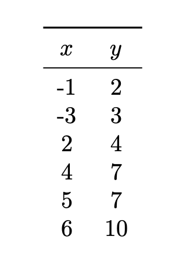
What is the predicted value of \(y\) at \(x = 3\) if the 3-nearest neighbor rule is used?
Solution
6
Problem #002
Tags: linear prediction functions
Suppose a linear prediction rule \(H(\vec x; \vec w) = \Aug(\vec x) \cdot\vec w\) is parameterized by the weight vector \(\vec w = (3, -2, 5, 2)^T\). Let \(\vec z = (1, -1, -2)^T\). What is \(H(\vec z)\)?
Solution
-8
Problem #003
Tags: linear regression, least squares
Suppose a line of the form \(H(x) = w_0 + w_1 x\) is fit to a data set of points \(\{(x_i, y_i)\}\) in \(\mathbb R^2\) by minimizing the mean squared error. Let the mean squared error of this predictor with respect to this data set be \(E_1\).
Next, create a new data set by adding a single new point to the original data set with the property that the new point lies exactly on the line \(H(x) = w_0 + w_1 x\) that was fit above. Let the mean squared error of \(H\) on this new data set be \(E_2\).
Which of the following is true?
Solution
\(E_1 > E_2\)
Problem #004
Tags: linear prediction functions
Suppose a linear predictor \(H_1\) is fit on a data set \(X = \{\nvec{x}{i}, y_i\}\) of \(n\) points by minimizing the mean squared error, where each \(\nvec{x}{i}\in\mathbb R^d\).
Let \(Z = \{\nvec{z}{i}, y_i\}\) be the data set obtained from the original by standardizing each feature. That is, if a matrix were created with the \(i\)th row being \(\nvec{z}{i}\), then the mean of each column would be zero, and the variance would be one.
Suppose a linear predictor \(H_2\) is fit on this standardized data by minimizing the mean squared error.
True or False: \(H_1(\nvec{x}{i}) = H_2(\nvec{z}{i})\) for each \(i = 1, \ldots, n\).
Solution
True.
Problem #005
Tags: object type
Part 1)
Let \(\Phi\) be an \(n \times d\) design matrix, let \(\lambda\) be a real number, and let \(I\) be a \(d \times d\) identity matrix.
What type of object is \((\Phi^T \Phi + n \lambda I)^{-1}\)?
Solution
A \(d \times d\) matrix
Part 2)
Let \(\Phi\) be an \(n \times d\) design matrix, and let \(\vec y \in\mathbb R^n\). What type of object is \(\Phi^T \vec y\)?
Solution
A vector in \(\mathbb R^d\)
Part 3)
Let \(\vec w \in\mathbb R^{d+1}\), and for for each \(i \in\{1, 2, \ldots, n\}\) let \(\nvec{x}{i}\in\mathbb R^d\) and \(y_i \in\mathbb R\).
What type of object is:
Solution
A scalar
Part 4)
Let \(\vec w \in\mathbb R^{d+1}\), and for for each \(i \in\{1, 2, \ldots, n\}\) let \(\nvec{x}{i}\in\mathbb R^d\) and \(y_i \in\mathbb R\). Consider the empirical risk with respect to the square loss of a linear predictor on a data set of \(n\) points:
What type of object is \(\nabla R(\vec w)\); that is, the gradient of the risk with respect to the parameter vector \(\vec w\)?
Solution
A vector in \(\mathbb R^{d+1}\)
Problem #006
Tags: linear prediction functions
Let \(\nvec{x}{1} = (-1, -1)^T\), \(\nvec{x}{2} = (1, 1)^T\), and \(\nvec{x}{3} = (-1, 1)^T\). Suppose \(H\) is a linear prediction function, and that \(H(\nvec{x}{1}) = 2\) while \(H(\nvec{x}{2}) = -2\) and \(H(\nvec{x}{3}) = 0\).
Let \(\nvec{x}{4} = (1,-1)^T\). What is \(H(\nvec{x}{4})\)?
Solution
0
Problem #007
Tags: computing loss
Consider the data set shown below. The ``\(\times\)'' points have label +1, while the ``o'' points have label -1. Shown are the places where a linear prediction function \(H\) is equal to zero, 1, and -1.
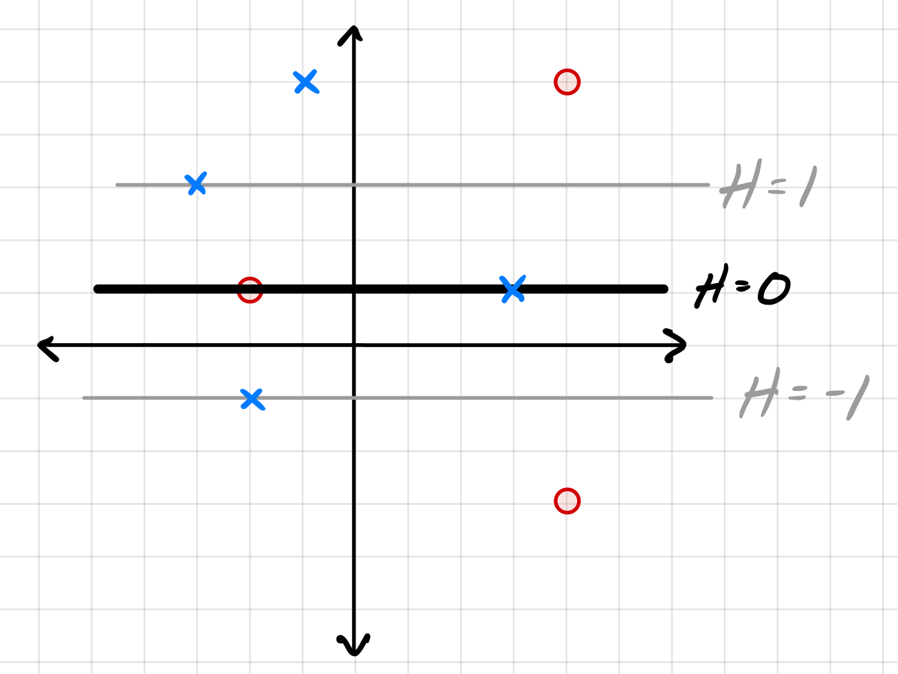
For each of the below subproblems, calculate the total loss with respect to the given loss function. That is, you should calculate \(\sum_{i=1}^n L(\nvec{x}{i}, y_i, \vec w)\) using the appropriate loss function in place of \(L\). Note that we have most often calculated the mean loss, but here we calculate the total so that we encounter fewer fractions.
Part 1)
What is the total square loss of \(H\) on this data set?
Solution
17
Part 2)
What is the total perceptron loss of \(H\) on this data set?
Solution
3
Part 3)
What is the total hinge loss of \(H\) on this data set?
Solution
7
Problem #008
Tags: subgradients
Consider the function \(f(x,y) = x^2 + |y|\). Plots of this function's surface and contours are shown below.
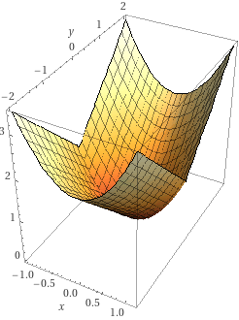
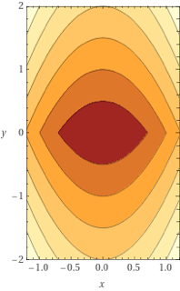
Which of the following are subgradients of \(f\) at the point \((0, 0)\)? Check all that apply.
Solution
\((0, 0)^T\), \((0, 1)^T\), and \((0, -1)^T\) are subgradients of \(f\) at \((0, 0)\).
Problem #009
Tags: gradient descent, perceptrons, gradients
Suppose gradient descent is to be used to train a perceptron classifier \(H(\vec x; \vec w)\) on a data set of \(n\) points, \(\{\nvec{x}{i}, y_i \}\). Recall that each iteration of gradient descent takes a step in the opposite direction of the ``gradient''.
Which gradient is being referred to here?
Solution
The gradient of the empirical risk with respect to \(\vec w\)
Problem #010
Tags: convexity
Let \(\{\nvec{x}{i}\}\) be a set of \(n\) vectors in \(\mathbb R^d\). Consider the function \(f(\vec w) = \sum_{i=1}^n \vec w \cdot\nvec{x}{i}\), where \(\vec w \in\mathbb R^d\).
True or False: \(f\) is convex as a function of \(\vec w\).
Solution
True.
Problem #011
Tags: SVMs
Let \(X = \{\nvec{x}{i}, y_i\}\) be a data set of \(n\) points where each \(\nvec{x}{i}\in\mathbb R^d\).
Let \(Z = \{\nvec{z}{i}, y_i\}\) be the data set obtained from the original by standardizing each feature. That is, if a matrix were created with the \(i\)th row being \(\nvec{z}{i}\), then the mean of each column would be zero, and the variance would be one.
Suppose that \(X\) and \(Z\) are both linearly-separable. Suppose Hard-SVMs \(H_1\) and \(H_2\) are trained on \(X\) and \(Z\), respectively.
True or False: \(H_1(\nvec{x}{i}) = H_2(\nvec{z}{i})\) for each \(i = 1, \ldots, n\).
Solution
False.
This is a tricky problem! For an example demonstrating why this is False, see: https://youtu.be/LSr55vyvfb4
Problem #012
Tags: least squares
Suppose a data set \(\{\nvec{x}{i}, y_i\}\) is linearly-separable.
True or false: a least squares classifier trained on this data set is guaranteed to achieve a training error of zero.
Solution
False
Problem #013
Tags: SVMs
The image below shows a linear prediction function \(H\) along with a data set; the ``\(\times\)'' points have label +1 while the ``\(\circ\)'' points have label -1. Also shown are the places where the output of \(H\) is 0, 1, and -1.
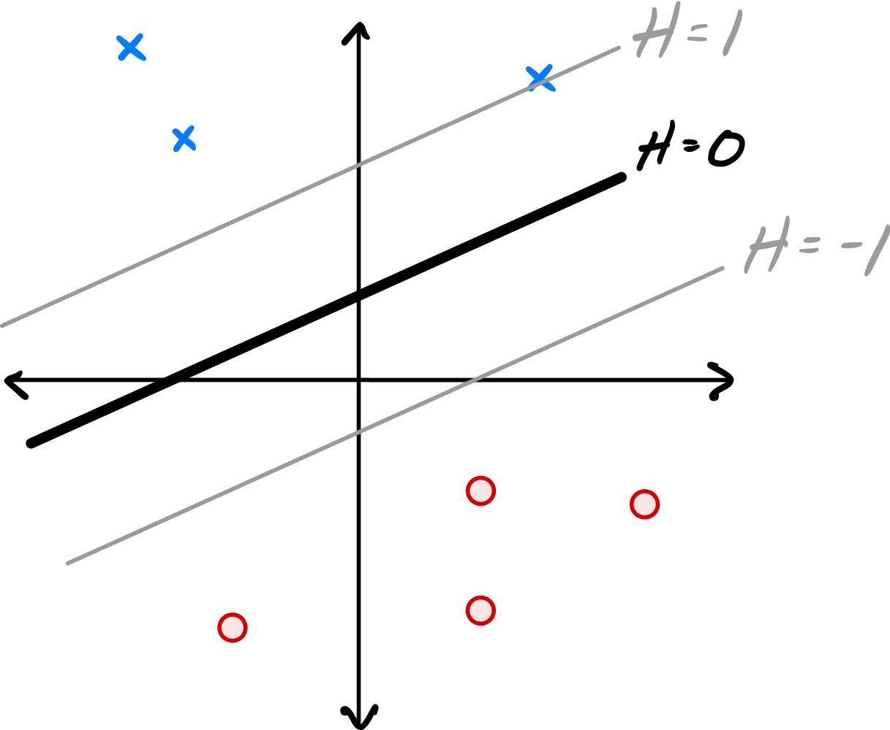
True or False: \(H\) could have been learned by training a Hard-SVM on this data set.
Solution
False.
The solution to the Hard-SVM problem is a hyperplane that separates the two classes with the maximum margin.
In this solution, the margin is not maximized: There is room for the ``exclusion zone'' between the two classes to grow, and for the margin to increase.
Problem #014
Tags: kernel ridge regression
Let \(\nvec{x}{1} = (1, 2, 0)^T\), \(\nvec{x}{2} = (-1, -1, -1)^T\), \(\nvec{x}{3} = (2, 2, 0)^T\), \(\nvec{x}{4} = (0, 2, 0)\).
Suppose a prediction function \(H(\vec x)\) is learned using kernel ridge regression on the above data set using the kernel \(\kappa(\vec x, \vec x') = (1 + \vec x \cdot\vec x')^2\) and regularization parameter \(\lambda = 3\). Suppose that \(\vec\alpha = (1, 0, -1, 2)^T\) is the solution of the dual problem.
Let \(\vec x = (0, 1, 0)^T\) be a new point. What is \(H(\vec x)\)?
Solution
18
Problem #015
Tags: regularization
Let \(R(\vec w)\) be the unregularized empirical risk with respect to the square loss (that is, the mean squared error) on a data set.
The image below shows the contours of \(R(\vec w)\). The dashed lines show places where \(\|\vec w\|_2\) is 2, 4, 6, etc.
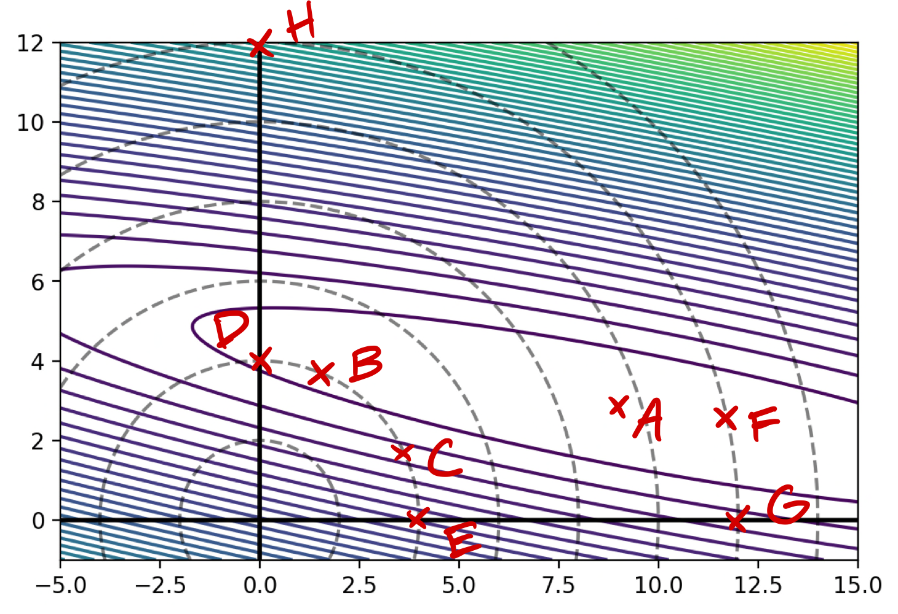
Part 1)
Assuming that one of the points below is the minimizer of the unregularized risk, \(R(\vec w)\), which could it possibly be?
Solution
A
Part 2)
Let the regularized risk \(\tilde R(\vec w) = R(\vec w) + \lambda\|\vec w \|_2^2\), where \(\lambda > 0\).
Assuming that one of the points below is the minimizer of the regularized risk, \(\tilde R(\vec w)\), which could it possibly be?
Solution
B
Problem #016
Tags: kernel ridge regression
Let \(\{\nvec{x}{i}, y_i\}\) be a data set of \(n\) points, with each \(\nvec{x}{i}\in\mathbb R^d\). Recall that the solution to the kernel ridge regression problem is \(\vec\alpha = (K + n \lambda I)^{-1}\vec y\), where \(K\) is the kernel matrix, \(I\) is the identity matrix, \(\lambda > 0\) is a regularization parameter, and \(\vec y = (y_1, \ldots, y_n)^T\).
Suppose kernel ridge regression is performed with a kernel \(\kappa\) that is a kernel for a feature map \(\vec\phi : \mathbb R^d \to\mathbb R^k\).
What is the size of the kernel matrix, \(K\)?
Solution
The kernel matrix is of size \(n \times n\).
Problem #017
Tags: gradients
Let \(f(\vec w) = \vec a \cdot\vec w + \lambda\|\vec w \|^2\), where \(\vec w \in\mathbb R^d\), \(\vec a \in\mathbb R^d\), and \(\lambda > 0\).
What is the minimizer of \(f\)? State your answer in terms of \(\vec a\) and \(\lambda\).
Solution
\(\vec w^* = -\frac{\vec{a}}{2\lambda}\)
Problem #018
Tags: nearest neighbor
Consider the data set of diamonds and circles shown below. Suppose a \(k\)-nn classifier is used to predict the label of the new point marked by \(\times\), with \(k = 3\). What will be the prediction? You may assume that the Euclidean distance is used.
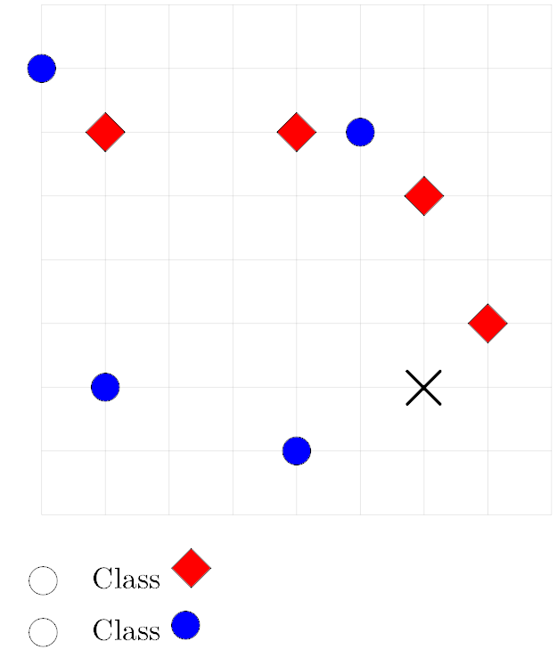
Solution
The new point will be classified as a Diamond.
To classify a point with \(k\)-nn, we examine the \(k\)(in this case, \(k = 3\)) nearest "neighbors" to whichever point we want to classify. Then, whichever class appears more among those neighbors, we'll predict our new point is part of that class too.
So, what are the three neighbors closest to our new point? Since we assume Euclidean distance (and not some other type of distance, like Manhattan distance), this problem becomes fairly easy to solve from first glance.
Graphically: the three nearest points are the red Diamond to the upper-right of our new point, the blue Circle to the lower-left of our new point, and the red Diamond directly above our new point. The diamond class is more common among the three neighbors, so we predict our new point will also be of the Diamond class.
Mathematically: Euclidean distance is defined by \(D = \sqrt{(\delta x)^2 + (\delta y)^2}\), where \(\delta x\) is change in the x-direction and \(\delta y\) is change in the y-direction. We can find the Euclidean distances from each point in our graph to our new point. Whichever three points have the smallest Euclidean distances are the three neighbors we should look at the classes of. After finding all Euclidean distances, we find that the three neighbors we should choose are the same as the ones we chose above, in the visual explanation. The respective Euclidean distances for these three points are \(\sqrt{1^2 + 1^2} = \sqrt{2}\), \(\sqrt{(-1)^2 + (-2)^2} = \sqrt{5}\), and \(\sqrt{0^2 + 3^2} = 3\), which are shorter than all other distances to the new point in the graph. As an aside, the idea behind \(k\)-nn is that we assume a property that if two points are similar in location (i.e. they are near each other), then they are likely similar in class. So, \(k\)-nn is valuable in situations where we have data that is very spatially correlated (ex: predicting price of a new house as "high" or "low" depending on other house prices in the area.)
Solution
To classify a point with \(k\)-nn, we examine the \(k\)(in this case, \(k = 3)\) nearest neighbors to whichever point we want to classify. Then, whichever class appears more among those neighbors, we'll predict our new point is part of that class too.
Graphically: The three nearest points are the red Diamond to the upper-right of our new point, the blue Circle to the lower-left of our new point, and the red Diamond directly above our new point. The diamond class is more common among the three neighbors, so we predict our new point will also be of the Diamond class.
Mathematically: Euclidean distance is defined by \(D = \sqrt{(\delta x)^2 + (\delta y)^2}\), where \(\delta x\) is change in the x-direction and \(\delta y\) is change in the y-direction. We can find the Euclidean distances from each point in our graph to our new point. Whichever three points have the smallest Euclidean distances to our new point are the three neighbors we should look at the classes of. After finding all Euclidean distances, we find that the three neighbors we should choose are the same as the ones we chose above, in the visual explanation. The respective Euclidean distances for these three points to our new point are \(\sqrt{1^2 + 1^2} = \sqrt{2}\), \(\sqrt{(-2)^2 + (-1)^2} = \sqrt{5}\), and \(\sqrt{0^2 + 3^2} = 3\), which are shorter than all other distances to the new point in the graph.
Problem #019
Tags: linear prediction functions
Suppose a linear prediction rule \(H(\vec x; \vec w) = \Aug(\vec x) \cdot\vec w\) is parameterized by the weight vector \(\vec w = (2, 1, -3, 4)^T\). Let \(\vec z = (3, -2, 1)^T\). What is \(H(\vec z)\)?
Solution
15
Problem #020
Tags: least squares
In the following, let \(\mathcal D_1\) be a set of points \((x_1, y_1), \ldots, (x_n, y_n)\) in \(\mathbb R^2\). Suppose a straight line \(H_1(x) = a_1 x + a_0\) is fit to this data set by minimizing the mean squared error, and let \(R_1\) the be mean squared error of this line.
Now create a second data set, \(\mathcal D_2\), by doubling the \(x\)-coordinate of each of the original points, but leaving the \(y\)-coordinate unchanged. That is, \(\mathcal D_2\) consists of points \((2x_1, y_1), \ldots, (2x_n, y_n)\). Suppose a straight line \(H_2(x) = b_1 x + b_0\) is fit to this data set by minimizing the mean squared error, and let \(R_2\) be the mean squared error of this line.
You may assume that all of the \(x_i\) are unique, as are all of the \(y_i\).
Part 1)
Which one of the following is true about \(R_1\) and \(R_2\)?
Solution
\(R_1 = R_2\)
Part 2)
Which one of the following is true about \(a_0\) and \(b_0\)(the intercepts)?
Solution
\(a_0 = b_0\)
Part 3)
Which one of the following is true about \(a_1\) and \(b_1\)(the slopes), assuming that the initial slope is positive?
Solution
\(a_1 > b_1\)
Problem #021
Tags: empirical risk minimization
Let \(\mathcal D\) be a data set of points in \(\mathbb R^d\). Suppose a linear prediction rule \(H_1(\vec x)\) is fit to the data by minimizing the risk with respect to the square loss, and suppose another linear prediction rule \(H_2(\vec x)\) is fit to the data by minimizing the risk with respect to the absolute loss.
True or False: \(H_1\) and \(H_2\) are guaranteed to be the same; that is, \(H_1(\vec x) = H_2(\vec x)\) for all inputs \(\vec x\).
Solution
False.
Problem #022
Tags: object type
Part 1)
Let \(\vec x \in\mathbb R^d\) and let \(A\) be an \(d \times d\) matrix. What type of object is \(\vec x^T A \vec x\)?
Solution
A scalar
Part 2)
Let \(A\) be an \(n \times n\) matrix, and let \(\vec x \in\mathbb R^n\). What type of object is: \((A + A^T)^{-1}x\)?
Solution
A vector in \(\mathbb R^n\)
Part 3)
Suppose we train a support vector machine \(H(\vec x) = \Aug(\vec x) \cdot\vec w\) on a data set of \(n\) points in \(\mathbb R^d\). What type of object is the resulting parameter vector, \(\vec w\)?
Solution
A vector in \(\mathbb R^{d+1}\)
Problem #023
Tags: linear prediction functions
Let \(\nvec{x}{1} = (-1, -1)^T\), \(\nvec{x}{2} = (1, 1)^T\), and \(\nvec{x}{3} = (-1,1)^T\). Suppose \(H\) is a linear prediction function, and that \(H(\nvec{x}{1}) = 2\), \(H(\nvec{x}{2}) = -2\), and \(H(\nvec{x}{3}) = 2\).
Let \(\vec z = (2,-1)^T\). What is \(H(\vec z)\)?
Solution
-4
Problem #024
Tags: computing loss
Consider the data set shown below. The ``\(\times\)'' points have label -1, while the ``\(\circ\)'' points have label +1. Shown are the places where a linear prediction function \(H\) is equal to zero (the thick solid line), 1, and -1 (the dotted lines). Each cell of the grid is 1 unit by 1 unit.
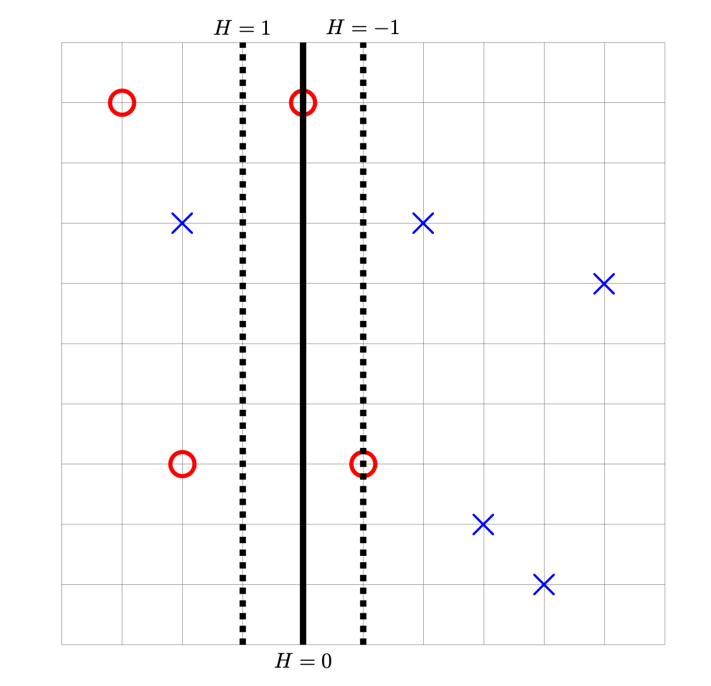
For each of the below subproblems, calculate the total loss with respect to the given loss function. That is, you should calculate \(\sum_{i=1}^n L(\nvec{x}{i}, y_i, \vec w)\) using the appropriate loss function in place of \(L\). Note that we have most often calculated the mean loss, but here we calculate the total so that we encounter fewer fractions.
Part 1)
What is the total square loss of \(H\) on this data set?
Solution
49
Part 2)
What is the total perceptron loss of \(H\) on this data set?
Solution
3
Part 3)
What is the total hinge loss of \(H\) on this data set?
Solution
6
Problem #025
Tags: subgradients
Consider the function \(f(x,y) = |x| + y^4\). Plots of this function's surface and contours are shown below.
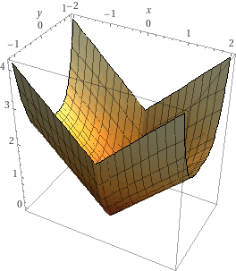
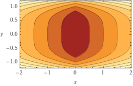
Write a valid subgradient of \(f\) at the point \((0, 1)\).
There are many possibilities, but you need only write one. For the simplicity of grading, please pick a subgradient whose coordinates are both integers, and write your answer in the form \((a, b)\), where \(a\) and \(b\) are numbers.
Solution
\((x, 4)\), where \(x \in[-1,1]\)
Problem #026
Tags: convexity
Consider the function \(f(x) = x^4 - x^2\) True or False: \(f\) is convex as a function of \(x\).
Solution
False.
Problem #027
Tags: SVMs
Suppose a data set \(\mathcal D\) is linearly separable. True or False: a Hard-SVM trained of \(\mathcal D\) is guaranteed to achieve 100\% training accuracy.
Solution
True.
Problem #028
Tags: gradient descent
Consider the function \(f(x, y) = x^2 + xy + y^2\). Suppose that a single iteration of gradient descent is run on this function with a starting location of \((1, 2)^T\) and a learning rate of \(\eta = 1/10\). What will be the \(x\) and \(y\) coordinates after this iteration?
Solution
\(x = 0.6\), \(y = 1.5\)
Problem #029
Tags: SVMs
The image below shows a linear prediction function \(H\) along with a data set; the ``\(\times\)'' points have label +1 while the ``\(\circ\)'' points have label -1. Also shown are the places where the output of \(H\) is 0, 1, and -1.
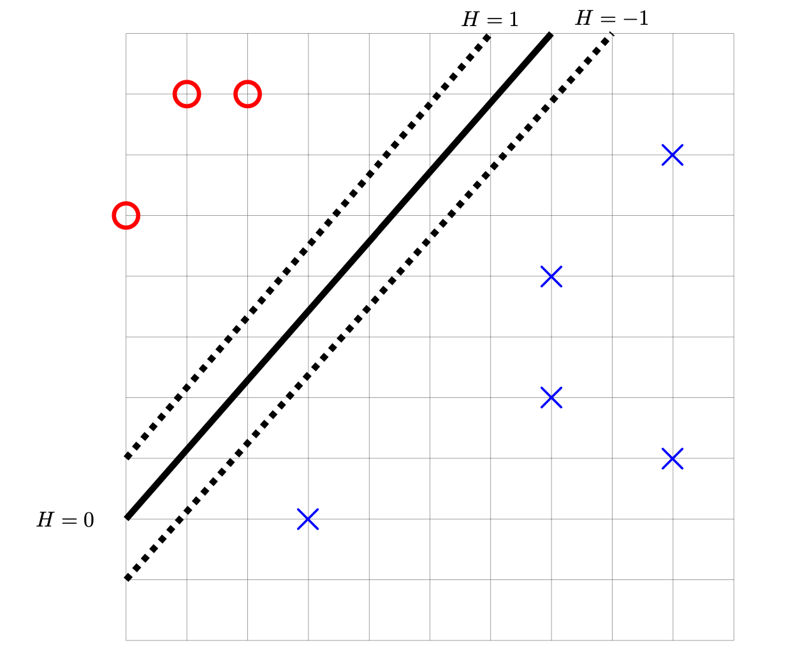
True or False: \(H\) could have been learned by training a Hard-SVM on this data set.
Solution
False.
Problem #030
Tags: kernel ridge regression
Consider the data set: \(\nvec{x}{1} = (1, 0, 2)^T\)\(\nvec{x}{2} = (-1, 0, -1)^T\)\(\nvec{x}{3} = (1, 2, 1)^T\)\(\nvec{x}{4} = (1, 1, 0)^T\) Suppose a prediction function \(H(\vec x)\) is learned using kernel ridge regression on the above data set using the kernel \(\kappa(\vec x, \vec x') = (1 + \vec x \cdot\vec x')^2\) and regularization parameter \(\lambda = 3\). Suppose that \(\vec\alpha = (-1, -2, 0, 2)^T\) is the solution of the dual problem.
Part 1)
What is the (2,3) entry of the kernel matrix?
\(K_{23} = \)
Part 2)
Let \(\vec x = (1, 1, 0)^T\) be a new point. What is \(H(\vec x)\)?
Problem #031
Tags: regularization
Let \(R(\vec w)\) be an unregularized empirical risk function with respect to some data set.
The image below shows the contours of \(R(\vec w)\). The dashed lines show places where \(\|\vec w\|_2\) is 1, 2, 3, etc.
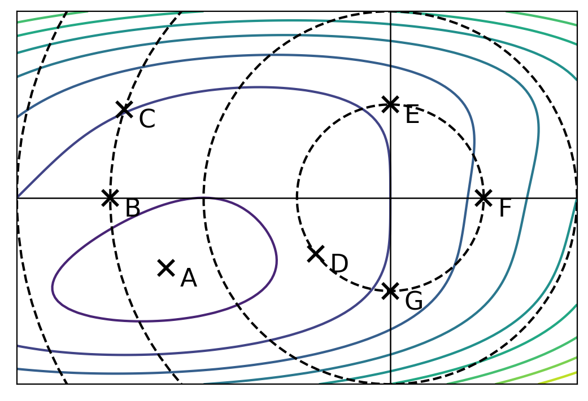
Part 1)
Assuming that one of the points below is the minimizer of the unregularized risk, \(R(\vec w)\), which could it possibly be?
Solution
A minimizer of the unregularized risk could be point A.
Part 2)
Let the regularized risk \(\tilde R(\vec w) = R(\vec w) + \lambda\|\vec w \|_2^2\), where \(\lambda > 0\).
Assuming that one of the points below is the minimizer of the regularized risk, \(\tilde R(\vec w)\), which could it possibly be?
Solution
A minimizer of the regularized risk could be point D.
Problem #032
Tags: bayes error, bayes classifier
Shown below are two conditional densities, \(p_1(x \,|\, Y = 1)\) and \(p_0(x \given Y = 0)\), describing the distribution of a continuous random variable \(X\) for two classes: \(Y = 0\)(the solid line) and \(Y = 1\)(the dashed line). You may assume that both densities are piecewise constant.
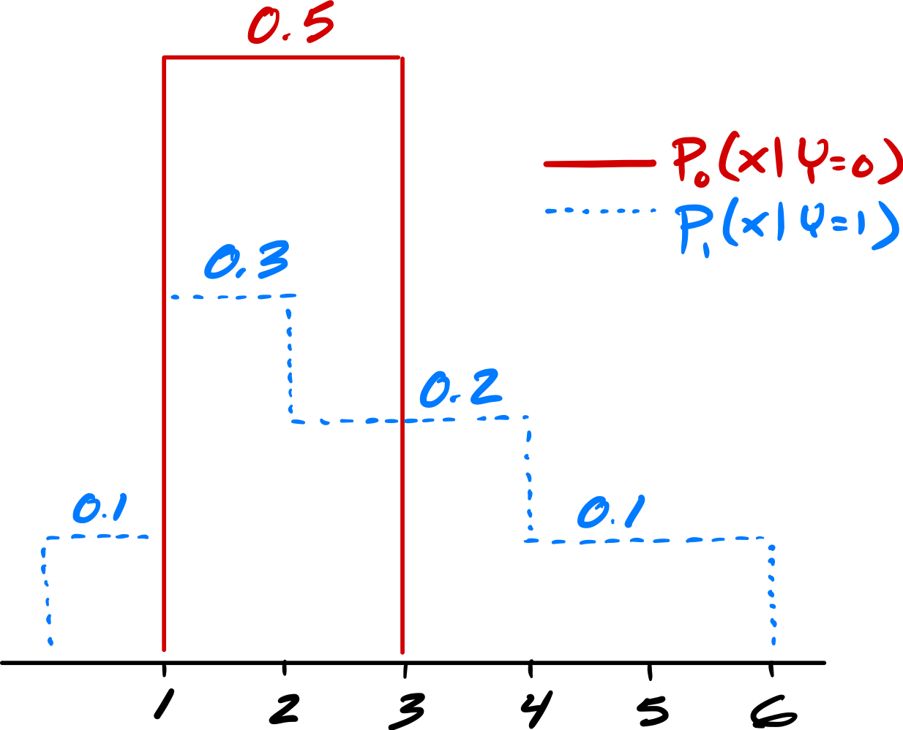
Part 1)
Suppose \(\pr(Y = 1) = 0.5\) and \(\pr(Y = 0) = 0.5\). What is the prediction of the Bayes classifier at \(x = 1.5\)?
Solution
Class 0
Part 2)
Suppose \(\pr(Y = 1) = 0.5\) and \(\pr(Y = 0) = 0.5\). What is the Bayes error with respect to this distribution?
Part 3)
Now suppose \(\pr(Y = 1) = 0.7\) and \(\pr(Y = 0) = 0.3\). What is the prediction of the Bayes classifier at \(x = 1.5\)?
Solution
Class 1
Part 4)
Now suppose \(\pr(Y = 1) = 0.7\) and \(\pr(Y = 0) = 0.3\). What is the Bayes error with respect to this distribution?
Problem #033
Tags: bayes classifier
Suppose the Bayes classifier achieves an error rate of 15\% on a particular data distribution. True or False: It is impossible for any classifier trained on data drawn from this distribution to achieve better than 85\% accuracy on a finite test set that is drawn from this distribution.
Solution
False.
Problem #034
Tags: histogram estimators
Consider the data set of ten points shown below:

Suppose this data is used to build a histogram density estimator, \(f\), with bins: \([0,2), [2, 6), [6, 10)\). Note that the bins are not evenly sized.
Part 1)
What is \(f(1.5)\)?
Part 2)
What is \(f(7)\)?
Problem #035
Tags: histogram estimators
Consider this data set of points \(x\) from two classes \(Y = 1\) and \(Y = 0\).
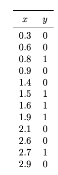
Suppose a histogram estimator with bins \([0,1)\), \([1, 2)\), \([2, 3)\) is used to estimate the densities \(p_1(x \given Y = 1)\) and \(p_0(x \given Y = 0)\), and these estimates are used in the Bayes classifier to make a prediction.
What will be the predicted class of a new point, \(x = 2.2\)?
Solution
Class 0.
Problem #036
Tags: density estimation, histogram estimators
Suppose a density estimate \(f : \mathbb R^3 \to\mathbb R^1\) is made using histogram estimators with bins having a length of 2 units, a width of 3 units, and a height of 1 unit.
What is the largest value that \(f(\vec x)\) can possibly have?
Problem #037
Tags: maximum likelihood
Suppose a discrete random variable \(X\) takes on values of either 0 or 1 and has the distribution:
where \(\theta\in[0, 1]\) is a parameter.
Given a data set \(x_1, \ldots, x_n\), what is the maximum likelihood estimate for the parameter \(\theta\)? Show your work.
Solution
The maximum likelihood estimate for \(\theta\) is the mean of all data points: \(\theta = \frac{1}{n}\sum_{i=1}^{n} x_i\) We can derive it as follows. First, set up the likelihood function
Then, to make our lives easier, we can find the log-likelihood before differentiating:
Problem #038
Tags: covariance
Consider a data set of \(n\) points in \(\mathbb R^d\), \(\nvec{x}{1}, \ldots, \nvec{x}{n}\). Suppose the data are standardized, creating a set of new points \(\nvec{z}{1}, \ldots, \nvec{z}{n}\). That is, if the new points are stacked into an \(n \times d\) matrix, \(Z\), the mean and variance of each column of \(Z\) would be zero and one, respectively.
True or False: the covariance matrix of the standardized data must be the \(d\times d\) identity matrix; that is, the \(d \times d\) matrix with ones along the diagonal and zeros off the diagonal.
Solution
False.
Problem #039
Tags: density estimation, maximum likelihood
Suppose data points \(\nvec{x}{1}, \ldots, \nvec{x}{n}\) are drawn from an arbitrary, unknown distribution with density \(f\).
True or False: it is guaranteed that, given enough data (that is, \(n\) large enough), a Gaussian fit to the data using the method of maximum likelihood will approximate the true underlying density \(f\) arbitrarily closely.
Solution
False.
Problem #040
Tags: Gaussians, maximum likelihood
Suppose a Gaussian with a diagonal covariance matrix is fit to 200 points in \(\mathbb R^4\) using the maximum likelihood estimators. How many parameters are estimated? Count each entry of \(\mu\) and the covariance matrix that must be estimated as its own parameter.
Problem #041
Tags: covariance
Suppose a data set consists of the following three measurements for each Saturday last year: \(X_1\): The day's high temperature \(X_2\): The number of people at Pacific Beach on that day \(X_3\): The number of people wearing coats on that day
Suppose the covariance between these features is calculated and placed into a \(3 \times 3\) sample covariance matrix, \(C\). Which of the below options most likely shows the sign of each entry of the sample covariance matrix?
Solution
The second option.
Problem #042
Tags: covariance
Suppose we have two data sets, \(\mathcal{D}_1\) and \(\mathcal{D}_2\), each containing \(n/2\) points in \(\mathbb R^d\). Let \(\nvec{\mu}{1}\) and \(C^{(1)}\) be the mean and sample covariance matrix of \(\mathcal{D}_1\), and let \(\nvec{\mu}{2}\) and \(C^{(2)}\) be the mean and sample covariance matrix of \(\mathcal{D}_2\).
Suppose the two data sets are combined into a single data set \(\mathcal D\) containing \(n\) points.
Part 1)
True or False: the mean of the combined data \(\mathcal{D}\) is equal to \(\displaystyle\frac{\nvec{\mu}{1} + \nvec{\mu}{2}}{2}\).
Solution
True.
Part 2)
True or False: the sample covariance matrix of the combined data \(\mathcal{D}\) is equal to \(\displaystyle\frac{C^{(1)} + C^{(2)}}{2}\).
Solution
False
Problem #043
Tags: covariance
Suppose a random vector \(\vec X = (X_1, X_2)\) has a multivariate Gaussian distribution. Suppose it is known that known that \(X_1\) and \(X_2\) are independent.
Let \(C\) be the Gaussian distribution's covariance matrix.
Part 1)
True or False: \(C\) must be diagonal.
Solution
True.
Part 2)
True or False: each entry of \(C\) must the same.
Solution
False.
Problem #044
Tags: naive bayes
Consider the below data set which collects information on 10 pets:
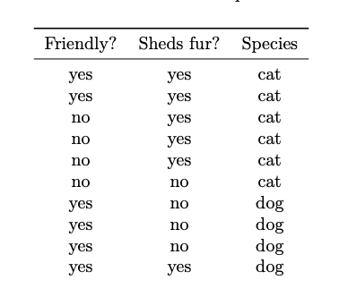
Suppose a new pet is friendly and sheds fur. What does a Na\"ive Bayes classifier predict for its species?
Solution
Cat.
Problem #045
Tags: naive bayes
Suppose a data set of 100 points in 10 dimensions is used in a binary classification task; that is, each point is labeled as either a 1 or a 0.
If Gaussian Naive Bayes is trained on this data, how many univariate Gaussians will be fit?
Problem #046
Tags: conditional independence
Recall that a deck of 52 cards contains:
Hearts: 2, 3, 4, 5, 6, 7, 8, 9, 10, J, Q, K, A
Diamonds: 2, 3, 4, 5, 6, 7, 8, 9, 10, J, Q, K, A
Clubs: 2, 3, 4, 5, 6, 7, 8, 9, 10, J, Q, K, A
Spades: 2, 3, 4, 5, 6, 7, 8, 9, 10, J, Q, K, A
Also recall that Hearts and Diamonds are red, while Clubs and Spades are black.
Part 1)
Suppose a single card is drawn at random.
Let \(A\) be the event that the card is a heart. Let \(B\) be the event that the card is a 5.
Are \(A\) and \(B\) independent events?
Solution
Yes, they are independent.
Part 2)
Suppose two cards are drawn at random (without replacing them into the deck).
Let \(A\) be the event that the second card is a heart. Let \(B\) be the event that the first card is red.
Are \(A\) and \(B\) independent events?
Solution
No, they are not.
Part 3)
Suppose two cards are drawn at random (without replacing them into the deck).
Let \(A\) be the event that the second card is a heart. Let \(B\) be the event that the second card is a diamond. Let \(C\) be the event that the first card is face card.
Are \(A\) and \(B\) conditionally independent given \(C\)?
Solution
No, they are not.
Problem #047
Tags: bayes error, bayes classifier
Part 1)
Suppose a particular probability distribution has the property that, whenever data are sampled from the distribution, the sampled data are guaranteed to be linearly separable. True or False: the Bayes error with respect to this distribution is 0\%.
Solution
True.
Part 2)
Now consider a different probability distribution. Suppose the Bayes classifier achieves an error rate of 0\% on this distribution. True or False: given a finite data set sampled from this distribution, the data must be linearly separable.
Solution
False.
Problem #048
Tags: histogram estimators
Consider this data set of points \(x\) from two classes \(Y = 1\) and \(Y = 0\).

Suppose a histogram estimator with bins \([0,2)\), \([2, 4)\), \([4, 6)\) is used to estimate the densities \(p_1(x \given Y = 1)\) and \(p_0(x \given Y = 0)\).
What will be the predicted class-conditional density for class 0 at a new point, \(x = 2.2\)? That is, what is the estimated \(p_0(2.2 \given Y = 0)\)?
Solution
1/6.
When estimating the conditional density, we look only at the six points in class zero. Two of these fall into the bin, and the bin width is 2, so the estimated density is:
Problem #049
Tags: histogram estimators
Suppose \(\mathcal D\) is a data set of 100 points. Suppose a density estimate \(f : \mathbb R^3 \to\mathbb R^1\) is constructed from \(\mathcal D\) using histogram estimators with bins having a length of 2 units, a width of 2 units, and a height of 2 units.
The density estimate within a particular bin of the histogram is 0.1. How many data points from \(\mathcal D\) fall within that histogram bin?
Problem #050
Tags: Gaussians
Suppose data points \(x_1, \ldots, x_n\) are independently drawn from a univariate Gaussian distribution with unknown parameters \(\mu\) and \(\sigma\).
True or False: it is guaranteed that, given enough data (that is, \(n\) large enough), a univariate Gaussian fit to the data using the method of maximum likelihood will approximate the true underlying density arbitrarily closely.
Solution
True.
Problem #051
Tags: maximum likelihood
Suppose a continuous random variable \(X\) has the density:
where \(\theta\in(0, \infty)\) is a parameter, and where \(x > 0\).
Given a data set \(x_1, \ldots, x_n\), what is the maximum likelihood estimate for the parameter \(\theta\)? Show your work.
Problem #052
Tags: covariance
Let \(\mathcal D\) be a set of data points in \(\mathbb R^d\), and let \(C\) be the sample covariance matrix of \(\mathcal D\). Suppose each point in the data set is shifted in the same direction and by the same amount. That is, suppose there is a vector \(\vec\delta\) such that if \(\nvec{x}{i}\in\mathcal D\), then \(\nvec{x}{i} + \vec\delta\) is in the new data set.
True or False: the sample covariance matrix of the new data set is equal to \(C\)(the sample covariance matrix of the original data set).
Solution
True.
Problem #053
Tags: Gaussians, maximum likelihood
Suppose a Gaussian with a diagonal covariance matrix is fit to 200 points in \(\mathbb R^4\) using the maximum likelihood estimators. How many parameters are estimated? Count each entry of \(\vec\mu\) and the covariance matrix that must be estimated as its own parameter (the off-diagonal elements of the covariance are zero, and shouldn't be included in your count).
Problem #054
Tags: Gaussians
Let \(f_1\) be a univariate Gaussian density with parameters \(\mu\) and \(\sigma_1\). And let \(f_2\) be a univariate Gaussian density with parameters \(\mu\) and \(\sigma_2 \neq\sigma_1\). That is, \(f_2\) is centered at the same place as \(f_1\), but with a different variance.
Consider the density \(f(x) = \frac{1}{2}(f_1(x) + f_2(x))\); the factor of \(1/2\) is a normalization factor which ensures that \(f\) integrates to one.
True or False: \(f\) must also be a Gaussian density.
Solution
False. The sum of two Gaussian densities is not necessarily a Gaussian density, even if the two Gaussians have the same mean.
If you try adding two Gaussian densities with different variances, you will get:
For this to be a Gaussian, we'd need to be able to write it in the form:
but this is not possible when \(\sigma_1 \neq\sigma_2\).
Problem #055
Tags: covariance
Consider the data set \(\mathcal D\) shown below.
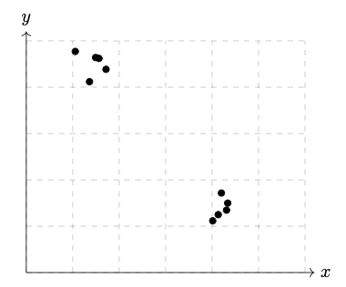
What will be the sign of the \((1,2)\) entry of the data's sample covariance matrix?
Solution
The sign will be negative.
Problem #056
Tags: linear and quadratic discriminant analysis
Suppose a data set of points in \(\mathbb R^2\) consists of points from two classes: Class 1 and Class 0. The mean of the points in Class 1 is \((3,0)^T\), and the mean of points in Class 0 is \((7,0)^T\). Suppose Linear Discriminant Analysis is performed using the same covariance matrix \(C = \sigma^2 I\) for both classes, where \(\sigma\) is some constant.
Suppose there were 50 points in Class 1 and 100 points in Class 0.
Consider a new point, \((5, 0)^T\), exactly halfway between the class means. What will LDA predict its label to be?
Solution
Class 0.
Problem #057
Tags: naive bayes
Consider the below data set which collects information on the weather on 10 days:
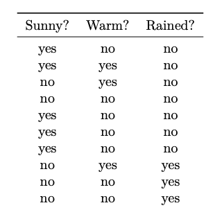
Suppose a new day is not sunny but is warm. What does a Na\"ive Bayes classifier predict for whether it rained?
Solution
Yes, it rained.
Problem #058
Tags: conditional independence
Suppose that a deck of cards has some cards missing. Namely, both the Ace of Spades and Ace of Clubs are missing, leaving 50 cards remaining.
Hearts: 2, 3, 4, 5, 6, 7, 8, 9, 10, J, Q, K, A
Diamonds: 2, 3, 4, 5, 6, 7, 8, 9, 10, J, Q, K, A
Clubs: 2, 3, 4, 5, 6, 7, 8, 9, 10, J, Q, K
Spades: 2, 3, 4, 5, 6, 7, 8, 9, 10, J, Q, K
Also recall that Hearts and Diamonds are red, while Clubs and Spades are black.
Part 1)
Suppose a single card is drawn at random.
Let \(A\) be the event that the card is a heart. Let \(B\) be the event that the card is an Ace.
Are \(A\) and \(B\) independent events?
Solution
No, they are not.
Part 2)
Suppose a single card is drawn at random.
Let \(A\) be the event that the card is a red. Let \(B\) be the event that the card is a heart. Let \(C\) be the event that the card is an ace.
Are \(A\) and \(B\) conditionally independent given \(C\)?
Solution
Yes, they are.
Part 3)
Suppose a single card is drawn at random.
Let \(A\) be the event that the card is a King. Let \(B\) be the event that the card is red. Let \(C\) be the event that the card is not a numbered card (that is, it is a J, Q, K, or A).
Are \(A\) and \(B\) conditionally independent given \(C\)?
Solution
No, they are not conditionally independent.
Problem #059
Tags: nearest neighbor
Let \(\mathcal X = \{(\nvec{x}{1}, y_1), \ldots, (\nvec{x}{n}, y_n)\}\) be a labeled dataset, where \(\nvec{x}{i}\in\mathbb R^d\) is a feature vector and \(y_i \in\{-1, 1\}\) is a binary label. Let \(\vec x\) be a new point that is not in the data set. Suppose a nearest neighbor classifier is used to predict the label of \(\vec x\), and the resulting prediction is \(-1\). (You may assume that there is a unique nearest neighbor of \(\vec x\).)
Now let \(\mathcal Z\) be a new dataset obtained from \(\mathcal X\) by scaling each feature by a factor of 2. That is, \(\mathcal Z = \{(\nvec{z}{1}, y_1), \ldots, (\nvec{z}{n}, y_n)\}\), where \(\nvec{z}{i} = 2 \nvec{x}{i}\) for each \(i\). Let \(\vec z = 2 \vec x\). Suppose a nearest neighbor classifier trained on \(\mathcal Z\) is used to predict the label of \(\vec z\).
True or False: the predicted label of \(\vec z\) must also be \(-1\).
Solution
True.
This question is essentially asking: if we scale a data set by a constant factor, does the nearest neighbor of a point change? The answer is no: therefore, the predicted label cannot change.
When we multiply each feature of a point by the same constant factor, it has the effect of scaling the data set. That is, if \(\mathcal X\) is the data shown in the top of the image shown below, then \(\mathcal Z\) is the data shown in the bottom of the image (not drawn to scale):
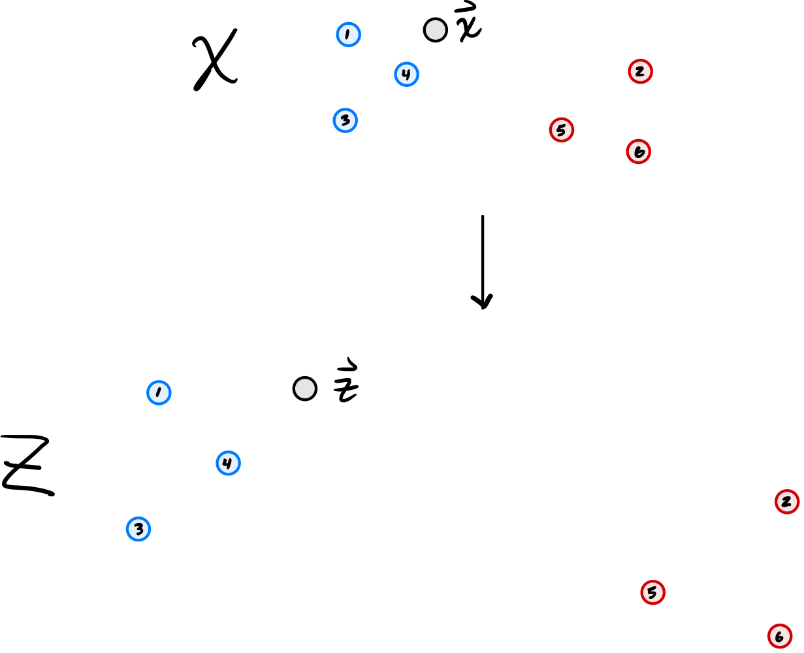
You can see that the nearest neighbor of \(\vec x\) in \(\mathcal X\) is point #4, and the nearest neighbor of \(\vec z\) in \(\mathcal Z\) remains point #4. As such, the predicted label does not change.
Problem #060
Tags: linear prediction functions
Suppose a linear prediction function \(H(\vec x) = w_0 + w_1 x_1 + w_2 x_2\) is trained to perform classification, and the weight vector is found to be \(\vec w = (2, -1, 2)^T\).
The figure below shows four possible decision boundaries: \(A\), \(B\), \(C\), and \(D\). Which of them is the decision boundary of the prediction function \(H\)?
You may assume that each grid square is 1 unit on each side, and the axes are drawn to show you where the origin is.
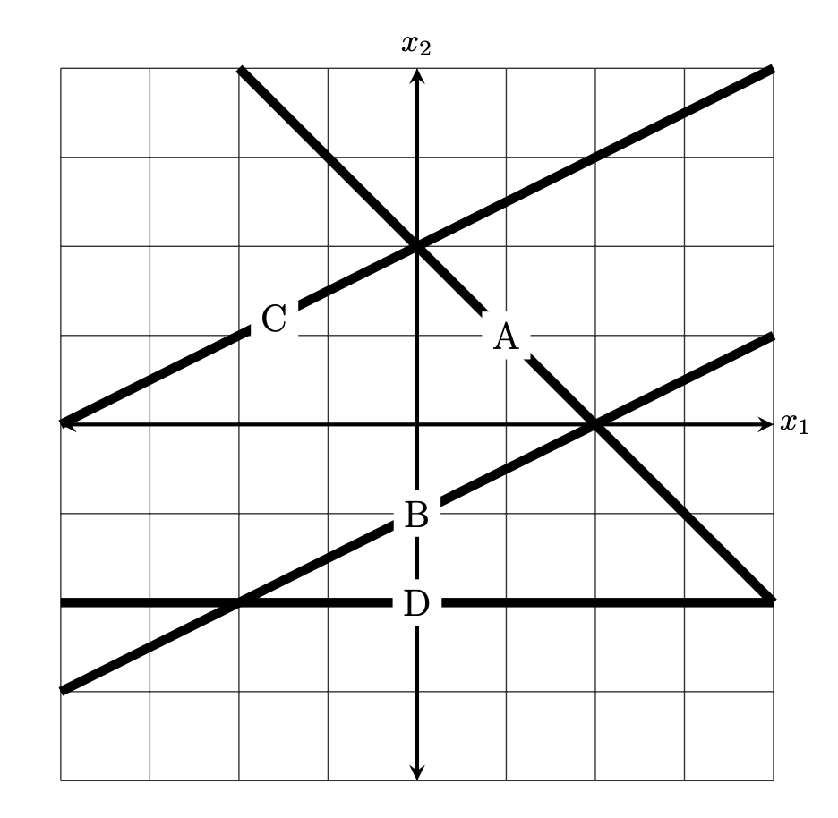
Solution
B.
Here are four ways to solve this problem:
Method 1: Guess and check, using the fact that $H(\vec x)$ must equal zero at every point along the decision boundary. For any of the proposed decision boundaries, we can take a point on the boundary, compute \(H(\vec x)\), and see if it equals 0.
Consider option \(A\), and take an arbitrary point on that boundar -- for example, the point \((1, 1)^T\). Computing \(H(\vec x)\), we get \(H(\vec x) = \vec w \cdot\operatorname{Aug}(\vec x) = (2, -1, 2) \cdot(1, 1, 1) = 3 \neq 0\). Therefore, this cannot be the decision boundary.
Considering option \(B\), it looks like the point \((0, -1)^T\) is on the boundary, Computing the value of \(H\) here, we get \(H(\vec x) = \vec w \cdot\operatorname{Aug}(\vec x) = (2, -1, 2) \cdot(1, -1, 1) = 0\). That's a good sign, but it's not sufficient to say that this must be the decision boundary (at this point, all we can say is that whatever the decision boundary is, it must go through \((0, -1)\).) To make sure, we pick a second point on the boundary, say, \((2, 0)^T\). Computing \(H\) at this point, we get \(H(\vec x) = \vec w \cdot\operatorname{Aug}(\vec x) = (2, -1, 2) \cdot(1, 2, 0) = 0\). With this, we can conclude that \(B\) must be the decision boundary.
Method 2: Use the fact that $(w_1, w_2)$ is orthogonal to the decision boundary. In Homework 02, we learned a useful way of relating the decision boundary to the weight vector \(\vec w = (w_0, w_1, w_2)^T\): it is orthogonal to the vector \(\vec w' = (w_1, w_2)^T\).
In this case, \(\vec w' = (-1, 2)^T\); this is a vector that up and to the left (more up than left). This rules out options \(A\) and \(D\), since they can't be orthogonal to that vector. There are several ways to decide between \(B\) and \(C\), including the logic from Method 1.
Method 3: Find the equation of the decision boundary in $y = mx + b$ form. Another way to solve this problem is to find the equation of the decision boundary in familiar ``\(y = mx + b\)'' form. We can do this by setting \(H(\vec x) = 0\) and solving for \(x_2\) in terms of \(x_1\). We get:
Plugging in \(w_0 = 2\), \(w_1 = -1\), and \(w_2 = 2\), we get
So the decision boundary is a line with slope \(-\frac{1}{2}\) and \(y\)-intercept \(-1\). This is exactly the equation of the line in option \(B\).
Method 4: reasoning about the slope in each coordinate. Similar to Method 2, we can rule out options \(A\) and \(D\) by reasoning about the slope of the decision boundary in each coordinate.
Imagine this scenario: you're standing on the surface of \(H\) at a point where \(H = 0\)(that is, you're on the decision boundary). You will take one step to the right (i.e., one step in the \(x_1\) direction), which will (in general) cause you to leave the decision boundary and either increase or decrease in height. If you want to get back to the decision boundary, and your next step must be either up or down, which should it be? The answer will tell you whether the decision boundary looks like \(/\) or like \(\backslash\).
In this case, taking a step to the right (in the \(x_1\) direction) will cause you to decrease in height. This is because the \(w_1\) component of \(\vec w\) is negative, and so increasing \(x_1\) will decrease \(H\). Now, to get back to the decision boundary, you must increase your height to get back to \(H = 0\). Since the slope in the \(x_2\) direction is positive (2, to be exact), you must increase\(x_2\) in order to increase \(H\). Therefore, the decision boundary is up and to the right: it looks like \(/\).
Problem #061
Tags: feature maps, linear prediction functions
Suppose a linear prediction function \(H(\vec x) = w_1 \phi_1(\vec x) + w_2 \phi_2(\vec x) + w_3 \phi_3(\vec x) + w_4 \phi_4(\vec x)\) is fit using the basis functions
where \(\vec x = (x_1, x_2)^T\) is a feature vector in \(\mathbb R^2\). The weight vector \(\vec w\) is found to be \(\vec w = (1, -2, 3, -4)^T\).
Let \(\vec x = (1, 2)^T\). What is \(H(\vec x)\)?
Solution
We have:
Problem #062
Tags: linear regression, least squares
Suppose a linear regression model \(H(\vec x) = w_0 + w_1 x_1 + w_2 x_2\) is trained by minimizing the mean squared error on the data shown below, where \(x_1\) and \(x_2\) are the features and \(y\) is the target:
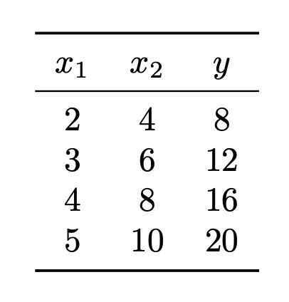
True or False: there is a unique weight vector \(\vec w = (w_0, w_1, w_2)^T\) minimizing the mean squared error for this data set.
Solution
False.
\(y\) can be predicted exactly using only \(x_1\). In particular, \(y = 4x_1\). So the weight vector \(\vec w = (0, 4, 0)^T\) is one that minimizes the mean squared error.
On the other hand, \(y\) can also be predicted exactly using only \(x_2\). In particular, \(y = 2x_2\). So the weight vector \(\vec w = (0, 0, 2)^T\) is another that minimizes the mean squared error.
In fact, there are infinitely many weight vectors that minimize the mean squared error in this case. Geometrically, this is because the data are all along a 2-dimensional line in 3-dimensional space, and by doing regression we are fitting a plane to the data. There are infinitely many planes that pass through a given line, each of them with a different corresponding weight vector, so there are infinitely many weight vectors that minimize the mean squared error.
Now you might be thinking: the mean squared error is convex, so there can be only one minimizer. It is true that the MSE is convex, but that doesn't imply that there is only one minimizer! More specifically, any local minima of a convex function is also a global minimum, but there can be many local minima. Take, for example, the function \(f(x, y) = x^2\). The point \((0, 0)\) is a minimizer, but so is \((0, 2)\) and \((0, 100)\), and so on. There are infinitely many minimizers!
Problem #063
Tags: linear prediction functions
Suppose a linear prediction function \(H(\vec x) = w_0 + w_1 x_1 + w_2 x_2\) is fit to data and the following are observed:
At a point, \(\nvec{x}{1} = (1, 1)^T\), the value of \(H\) is 4.
At a point, \(\nvec{x}{2} = (1, 0)^T\), the value of \(H\) is 0.
At a point, \(\nvec{x}{3} = (0, 0)^T\), the value of \(H\) is -4.
What is the value of \(H\) at the point \(\nvec{x}{4} = (0, 1)^T\)?
Solution
The four points make a square:
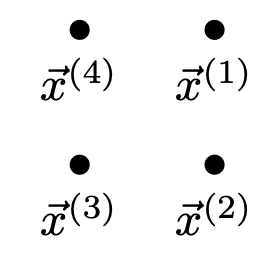
Since \(H = 0\) at \(\nvec{x}{2}\), the decision boundary must pass through that point. And since \(H(\nvec{x}{1}) = 4 = -H(\nvec{x}{3})\), the points \(\nvec{x}{1}\) and \(\nvec{x}{3}\) are equidistant from the decision boundary. Therefore, the decision boundary must pass exactly halfway between \(\nvec{x}{1}\) and \(\nvec{x}{3}\). This makes a line going through \(\nvec{x}{4}\), meaning that \(\nvec{x}{4}\) is on the decision boundary, so \(H(\nvec{x}{4}) = 0\).
Problem #064
Tags: object type
Choose the option which best completes the following sentence: In least squares regression, we can fit a linear prediction function \(H\) by computing the gradient of the _________ with respect to ________ and solving.
Solution
risk, the weights
Problem #065
Tags: object type
Part 1)
For each \(i = 1, \ldots, n\), let \(\nvec{x}{i}\) be a vector in \(\mathbb R^d\) and let \(\alpha_i\) be a scalar. What type of object is:
Solution
A vector in \(\mathbb R^d\)
Part 2)
Let \(\Phi\) be an \(n \times d\) matrix, let \(\vec y\) be a vector in \(\mathbb R^n\), and let \(\vec\alpha\) be a vector in \(\mathbb R^n\). What type of object is:
Solution
A scalar
Part 3)
Let \(\vec x\) be a vector in \(\mathbb R^d\), and let \(A\) be a \(d \times d\) matrix. What type of object is:
Solution
A scalar
Part 4)
Let \(A\) be a \(d \times n\) matrix. What type of object is \((A A^T)^{-1}\)?
Solution
A \(d \times d\) matrix
Part 5)
For each \(i = 1, \ldots, n\), let \(\nvec{x}{i}\) be a vector in \(\mathbb R^d\). What type of object is:
Solution
A \(d \times d\) matrix
Problem #066
Tags: computing loss
Consider the data set shown below. The 4 points marked with ``+'' have label +1, while the 3 ``\(\circ\)'' points have label -1. Shown are the places where a linear prediction function \(H\) is equal to zero (the thick solid line), 1, and -1 (the dotted lines). Each cell of the grid is 1 unit by 1 unit. The origin is not specified; it is not necessary to know the absolute coordinates of the data to complete this problem.
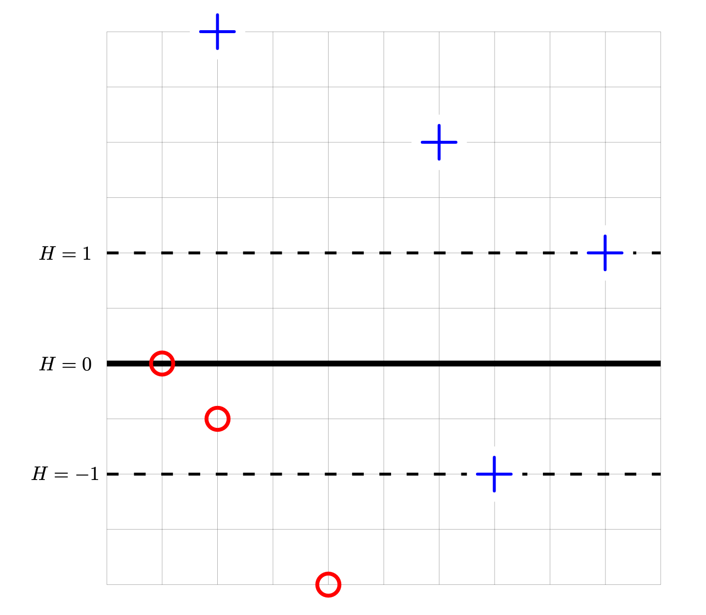
For each of the below subproblems, calculate the total loss with respect to the given loss function. That is, you should calculate \(\sum_{i=1}^n L(\nvec{x}{i}, y_i, \vec w)\) using the appropriate loss function in place of \(L\). Note that we have most often calculated the mean loss, but here we calculate the total so that we encounter fewer fractions.
Part 1)
What is the totalsquare loss of \(H\) on this data set?
Part 2)
What is the totalperceptron loss of \(H\) on this data set?
Part 3)
What is the totalhinge loss of \(H\) on this data set?
Problem #067
Tags: subgradients
Consider the piecewise function:
For convenience, a plot of this function is shown below:
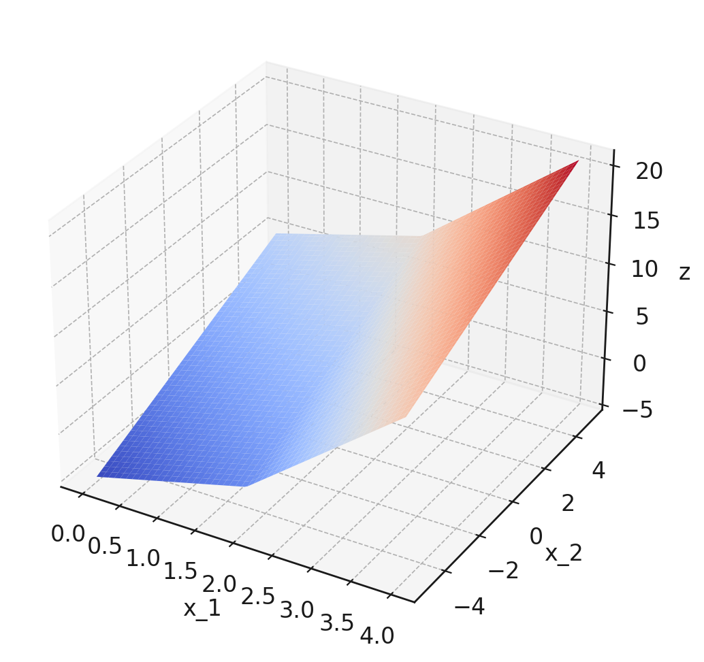
Note that the plot isn't intended to be precise enough to read off exact values, but it might help give you a sense of the function's behavior. In principle, you can do this question using only the piecewise definition of \(f\) given above.
Part 1)
What is the gradient of this function at the point \((0, 0)\)?
Part 2)
Which of the below are valid subgradients of the function at the point \((2,0)\)? Select all that apply.
Solution
\((3,1)^T\) and \((2,1)^T\) are valid subgradients of the function at \((2,0)\).
Problem #068
Tags: gradient descent
Recall that a subgradient of the absolute loss is:
Suppose you are running subgradient descent to minimize the risk with respect to the absolute loss in order to train a function \(H(x) = w_0 + w_1 x\) on the following data set:
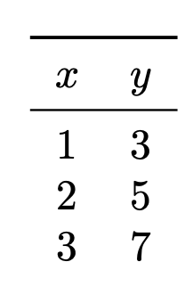
Suppose that the initial weight vector is \(\vec w = (0, 0)^T\) and that the learning rate \(\eta = 1\). What will be the weight vector after one iteration of subgradient descent?
Solution
To perform subgradient descent, we need to compute the subgradient of the risk. The main thing to remember is that the subgradient of the risk is the average of the subgradient of the loss on each data point.
So to start this problem, calculuate the subgradient of the loss for each of the three points. Our formula for the subgradient of the absolute loss tells us to compute \(\Aug(\vec x) \cdot w - y\) for each point and see if this is positive or negative. If it is positive, the subgradient is \(\Aug(\vec x)\); if it is negative, the subgradient is \(-\Aug(\vec x)\).
Now, the initial weight vector \(\vec w\) was conveniently chosen to be \(\vec 0\), meaning that \(\operatorname{Aug}(\vec x) \cdot\vec w = 0\) for all of our data points. Therefore, when we compute \(\operatorname{Aug}(\vec x) \cdot\vec w - y\), we get \(-y\) for every data point, and so we fall into the second case of the subgradient formula for every data point. This means that the subgradient of the loss at each data point is \(-\operatorname{Aug}(\vec x)\). Or, more concretely, the subgradient of the loss at each of the three data points is:
\((-1, -1)^T\)\((-1, -2)^T\)\((-1, -3)^T\) This means that the subgradient of the risk is the average of these three:
The subgradient descent update rule says that \(\vec w^{(1)} = \vec w^{(0)} - \eta\vec g\), where \(\vec g\) is the subgradient of the risk. The learning rate \(\eta\) was given as 1, so we have \(\vec w^{(1)} = \vec w^{(0)} - \vec g = \vec 0 - \begin{bmatrix}-1\\ -2 \end{bmatrix} = \begin{bmatrix}1\\ 2 \end{bmatrix}\).
Problem #069
Tags: convexity
Let \(\mathcal X = \{(\nvec{x}{1}, y_1), \ldots, (\nvec{x}{n}, y_n)\}\) be a data set for regression, with each \(\nvec{x}{i}\in\mathbb R^d\) and each \(y_i \in\mathbb R\). Consider the following function:
True or False: \(R(\vec w)\) is a convex function of \(\vec w\).
Solution
True.
Problem #070
Tags: regularization
Recall that in ridge regression, we solve the following optimization problem:
where \(\lambda > 0\) is a hyperparameter controlling the strength of regularization.
Suppose you solve the ridge regression problem with \(\lambda = 2\), and the resulting solution is the weight vector \(\vec w_\text{old}\). You then solve the ridge regression problem with \(\lambda = 4\) and find a weight vector \(\vec w_\text{new}\).
True or False: each component of the new solution, \(\vec w_\text{new}\), must be less than or equal to the corresponding component of the old solution, \(\vec w_\text{old}\).
Solution
False.
While it is true that \(\|\vec w_\text{new}\|\leq\|\vec w_\text{old}\|\), this does not imply that each component of \(\vec w_\text{new}\) is less than or equal to the corresponding component of \(\vec w_\text{old}\).
The picture to have in mind is that of the contour lines of the mean squared error (which are ovals), along with the circles representing where \(\|\vec w\| = c\) for some constant \(c\). The question asked us to consider going from \(\lambda = 2\) to \(\lambda = 4\), but to gain an intuition we can think of going from no regularization (\(\lambda = 0\)) to some regularization (\(\lambda > 0\)); this won't affect the outcome, but will make the story easier to tell.
Consider the situation shown below:
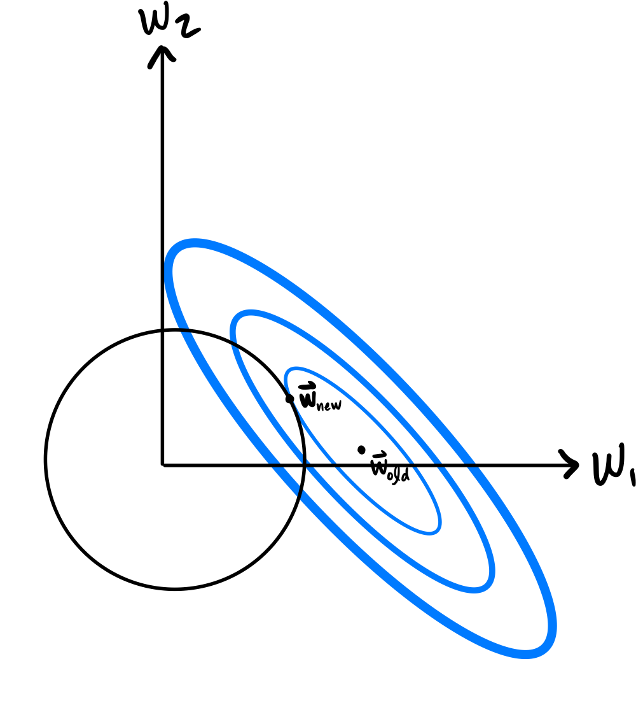
When we had no regularization, the solution was \(\vec w_\text{old}\), as marked. Suppose we add regularization, and we're told that the regularization is such that when we solve the ridge regression problem, the norm of \(\vec w_\text{new}\) will be equal to \(c\), and that the radius of the circle we've drawn is \(c\). Then the solution \(\vec w_\text{new}\) will be the point marked, since that is the point on the circle that is on the lowest contour.
Notice that the point \(\vec w_\text{new}\) is closer to the origin, and it's first component is much smaller than the first component of \(\vec w_\text{old}\). However, the second component of \(\vec w_\text{new}\) is actually larger than the second component of \(\vec w_\text{old}\).
Problem #071
Tags: SVMs
In lecture, we saw that SVMs minimize the (regularized) risk with respect to the hinge loss. Now recall, the 0-1 loss, which was defined in lecture as:
Part 1)
Suppose a Hard SVM is trained on linearly-separable data. True or False: the solution is guaranteed to have the smallest 0-1 risk of any possible linear prediction function \(H(\vec x) = \vec w \cdot\operatorname{Aug}(\vec x)\).
Solution
True. If the data is linearly seperable, then a Hard-SVM will draw a decision boundary that goes between the two classes, perfectly classifying the training data and achieve a 0-1 risk of zero.
Part 2)
Suppose a Soft SVM is trained on linearly-separable data using an unknown slack parameter \(C\). True or False: the solution is guaranteed to have the smallest 0-1 risk of any possible linear prediction function \(H(\vec x) = \vec w \cdot\operatorname{Aug}(\vec x)\).
Solution
False.
Part 3)
Suppose a Soft SVM is trained on data that is not linearly separable using an unknown slack parameter \(C\). True or False: the solution is guaranteed to have the smallest 0-1 risk of any possible linear prediction function \(H(\vec x) = \vec w \cdot\operatorname{Aug}(\vec x)\).
Solution
False.
Problem #072
Tags: perceptrons, gradients
Suppose a perceptron classifier \(H(\vec x) = \vec w \cdot\vec x\) is trained on the data shown below. The points marked with ``+'' have label +1, while the ``\(\circ\)'' points have label -1. The perceptron's decision boundary is plotted as a thick solid line.
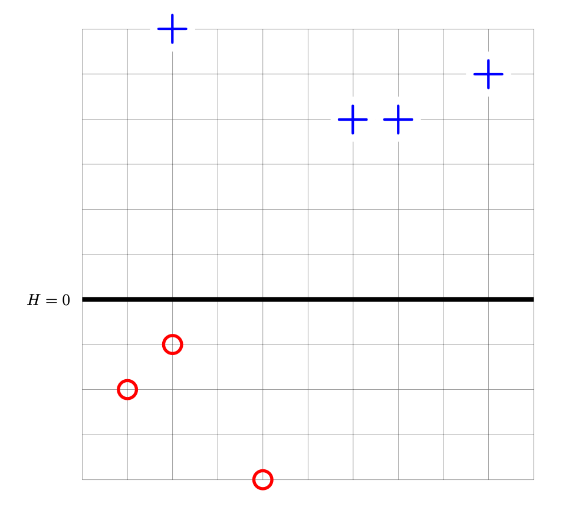
Let \(R(\vec w)\) be the risk with respect to the perceptron loss function, and let \(\vec w^*\) be the weight vector whose corresponding decision boundary is shown above.
True or False: the gradient of \(R\) evaluated at \(\vec w^*\) is \(\vec 0\).
Solution
True.
Problem #073
Tags: SVMs
Consider the data set shown below. The points marked with ``+'' have label +1, while the ``\(\circ\)'' points have label -1. Shown are the places where a linear prediction function \(H\) is equal to zero (the thick solid line), 1, and -1 (the dotted lines). Each cell of the grid is 1 unit by 1 unit. The origin is not specified (it is not necssary to know the absolute coordinates of any points for this problem).
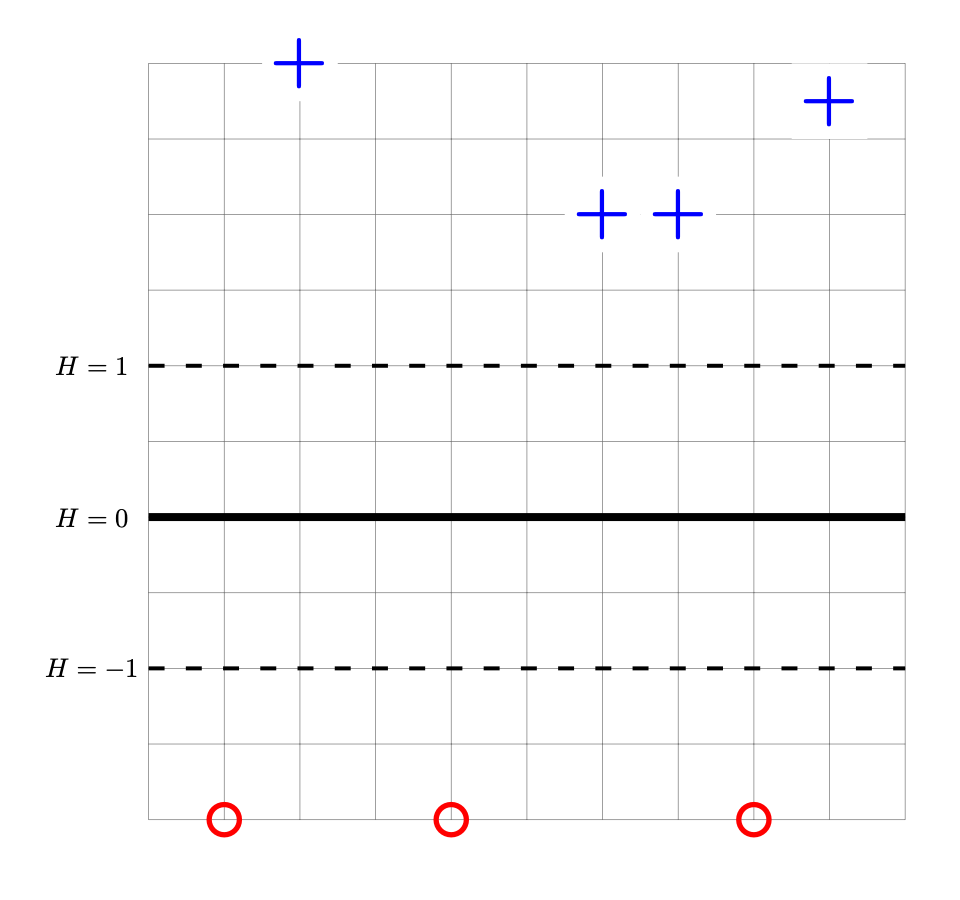
Suppose that the weight vector \(\vec w\) of the linear prediction function \(w_0 + w_1 x_1 + w_2 x_2\) shown above is \((6, 0, \frac{1}{2})^T\). This weight vector is not the solution to the Hard SVM problem.
What weight vector is the solution of the Hard SVM problem for this data set?
Solution
Although this decision boundary is in the right place, it can't be the solution to the Hard-SVM problem because its margin isn't maximized. Remember that the surface of \(H\) is a plane, and in this case the plane is too steep; we need to decrease its slope. We do this by scaling the weight vector by a constant factor; in this case, we want to double the margin, so we need to halve the slope. Therefore, the right answer is \(\frac{1}{2}(6, 0, \frac{1}{2})^T = (3, 0, \frac{1}{4})^T\).
Problem #074
Tags: gradients
Let \(\nvec{x}{1}, \ldots, \nvec{x}{n}\) be vectors in \(\mathbb R^d\) and let \(\vec w\) be a vector in \(\mathbb R^d\). Consider the function:
What is \(\frac{d}{d \vec w} f(\vec w)\)?
Solution
Problem #075
Tags: regularization
The ``inifinity norm'' of a vector \(\vec w \in\mathbb R^d\), written \(\|\vec w\|_\infty\), is defined as:
That is, it is the maximum absolute value of any entry of \(\vec w\).
Let \(R(\vec w)\) be an unregularized risk function on a data set. The solid curves in the plot below are the contours of \(R(\vec w)\). The dashed lines show where \(\|\vec w\|_\infty\) is equal to 1, 2, 3, and so on.

Let \(\tilde R(\vec w) = R(\vec w) + \lambda\|\vec w\|_\infty^2\), with \(\lambda > 0\). The point marked \(A\) is the minimizer of the unregularized risk. Suppose that it is known that one of the other points is the minimizer of the regularized risk, \(\tilde R(\vec w)\), for some unknown \(\lambda > 0\). Which point is it?
Solution
D.
Problem #076
Tags: object type
Part 1)
Let \(f : \mathbb R^d \to\mathbb R\) be a function and let \(\nvec{x}{0}\) be a vector in \(\mathbb R^d\). What type of object is \(\frac{d}{d \vec x} f(\nvec{x}{0})\)? In other words, what type of object is the gradient of \(f\) evaluated at \(\nvec{x}{0}\)?
Solution
A vector in \(\mathbb R^d\).
Part 2)
Let \(\Phi\) be an \(n \times d\) matrix and let \(\vec\alpha\) be a vector in \(\mathbb R^n\). What type of object is:
Solution
A scalar.
Part 3)
For each \(i = 1, \ldots, n\), let \(\nvec{x}{i}\) be a vector in \(\mathbb R^d\) and \(y_i\) be a scalar. Let \(\vec w\) be a vector in \(\mathbb R^d\). What type of object is:
Solution
A scalar.
Part 4)
Let \(X\) be an \(n \times d\) matrix, and assume that \(X^T X\) is invertible. What type of object is \(X(X^T X)^{-1} X^T\)?
Solution
An \(n \times n\) matrix.
Problem #077
Tags: nearest neighbor
Let \(\mathcal X = \{(\nvec{x}{1}, y_1), \ldots, (\nvec{x}{n}, y_n)\}\) be a labeled dataset, where \(\nvec{x}{i}\in\mathbb R^d\) is a feature vector and \(y_i \in\{-1, 1\}\) is a binary label. Let \(\vec x\) be a new point that is not in the data set. Suppose a nearest neighbor classifier is used to predict the label of \(\vec x\), and the resulting prediction is \(-1\). (You may assume that there is a unique nearest neighbor of \(\vec x\).)
Now let \(\mathcal Z\) be a new dataset obtained from \(\mathcal X\) by subtracting the same vector \(\vec\delta\) from each training point. That is, \(\mathcal Z = \{(\nvec{z}{1}, y_1), \ldots, (\nvec{z}{n}, y_n)\}\), where \(\nvec{z}{i} = \nvec{x}{i} - \vec\delta\) for each \(i\). Let \(\vec z = \vec x - \vec\delta\). Suppose a nearest neighbor classifier trained on \(\mathcal Z\) is used to predict the label of \(\vec z\).
True or False: the predicted label of \(\vec z\) must also be \(-1\).
Solution
True.
Problem #078
Tags: linear prediction functions
Suppose a linear prediction function \(H(\vec x) = w_0 + w_1 x_1 + w_2 x_2\) is trained to perform classification, and the weight vector is found to be \(\vec w = (1,-2,1)^T\).
The figure below shows four possible decision boundaries: \(A\), \(B\), \(C\), and \(D\). Which of them is the decision boundary of the prediction function \(H\)?
You may assume that each grid square is 1 unit on each side, and the axes are drawn to show you where the origin is.
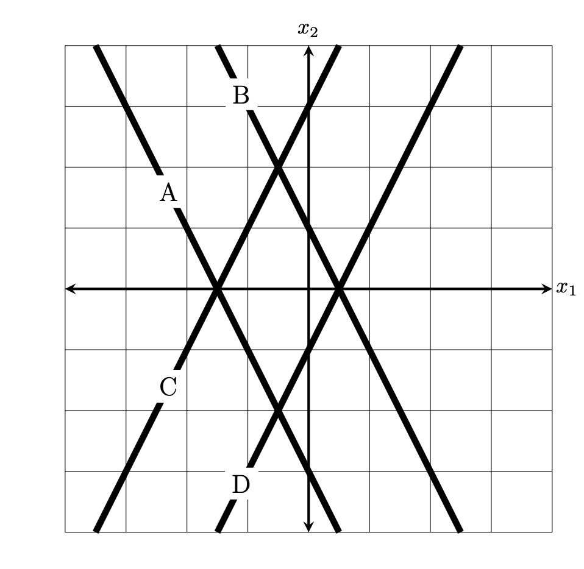
Solution
D.
Problem #079
Tags: feature maps, linear prediction functions
Suppose a linear prediction function \(H(\vec x) = w_1 \phi_1(\vec x) + w_2 \phi_2(\vec x) + w_3 \phi_3(\vec x) + w_4 \phi_4(\vec x)\) is fit using the basis functions
where \(\vec x = (x_1, x_2, x_3)^T\) is a feature vector in \(\mathbb R^3\). The weight vector \(\vec w\) is found to be \(\vec w = (2, 1, -2, -3)^T\).
Let \(\vec x = (1, 2, 1)^T\). What is \(H(\vec x)\)?
Problem #080
Tags: least squares, linear prediction functions
Consider the binary classification data set shown below consisting of six points in \(\mathbb R^2\). Each point has an associated label of either +1 or -1.
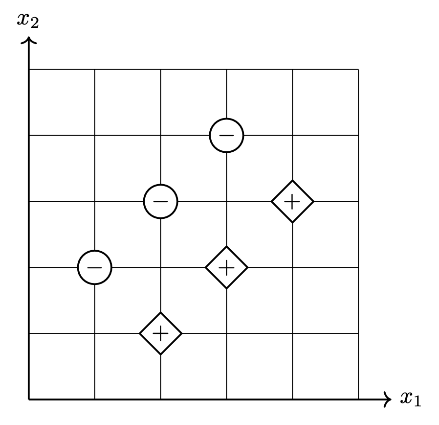
What is the mean squared error of a least squares classifier trained on this data set (without regularization)? Your answer should be a number.
Problem #081
Tags: convexity
Suppose \(f(x_1, x_2)\) is a convex function. Define the new function \(g(x) = f(x, 0)\). True or False: \(g(x)\) must be convex.
Solution
True.
Problem #082
Tags: convexity
Let \(f_1(x)\) be a convex function and let \(f_2(x)\) be a non-convex function. Define the new function \(f(x) = f_1(x) + f_2(x)\). True or False: \(f(x)\) must be non-convex.
Solution
For a simple counterexample, let \(f_1(x) = 4x^2\) and \(f_2(x) = -x^2\). Then \(f(x) = 4x^2 - x^2 = 3x^2\) is convex.
If that example seems too contrived, consider \(f_1(x) = x^4 + 3 x^2\) and \(f_2(x) = x^3\). Then \(f(x) = x^4 + x^3 + 3x^2\), and the second derivative test gives us \(f''(x) = 12x^2 + 6x + 6\), which is positive for all \(x\).
Problem #083
Tags: computing loss
Consider the data set shown below. The \(\diamond\) points marked with ``+'' have label +1, while the \(\circ\) points marked with ``\(-\)'' have label -1. Shown are the places where a linear prediction function \(H\) is equal to zero (the thick solid line), 1, and -1 (the dotted lines). Each cell of the grid is 1 unit by 1 unit. The origin is not specified; it is not necessary to know the absolute coordinates of the data to complete this problem.
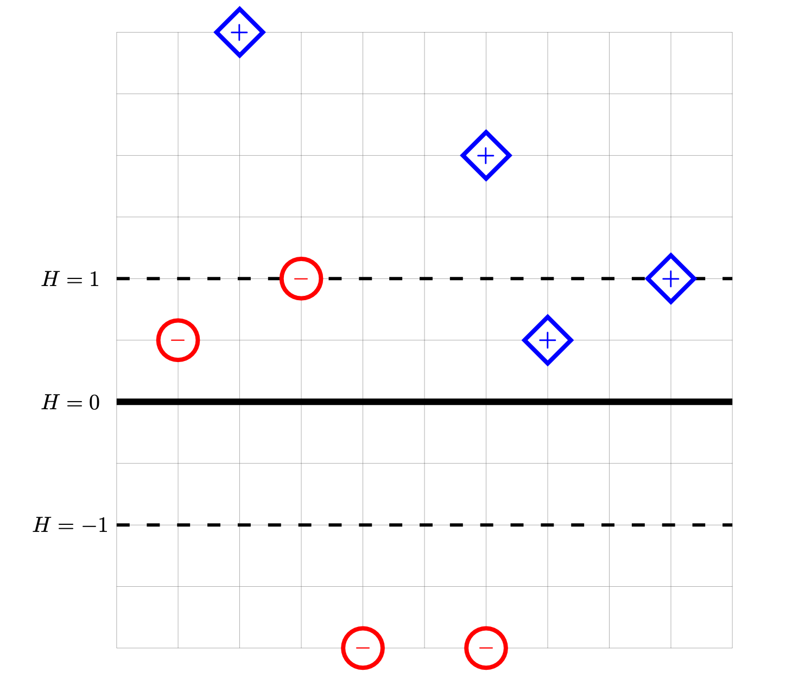
For each of the below subproblems, calculate the total loss with respect to the given loss function. That is, you should calculate \(\sum_{i=1}^n L(\nvec{x}{i}, y_i, \vec w)\) using the appropriate loss function in place of \(L\). Note that we have most often calculated the mean loss, but here we calculate the total so that we encounter fewer fractions.
Note: please double-check your calculations! We are not grading your work, so partial credit is difficult to assign on this problem.
Part 1)
What is the totalsquare loss of \(H\) on this data set?
Part 2)
What is the totalperceptron loss of \(H\) on this data set?
Part 3)
What is the totalhinge loss of \(H\) on this data set?
Problem #084
Tags: subgradients, gradients
Consider the following piecewise function that is linear in each quadrant:
For convenience, a plot of this function is shown below:
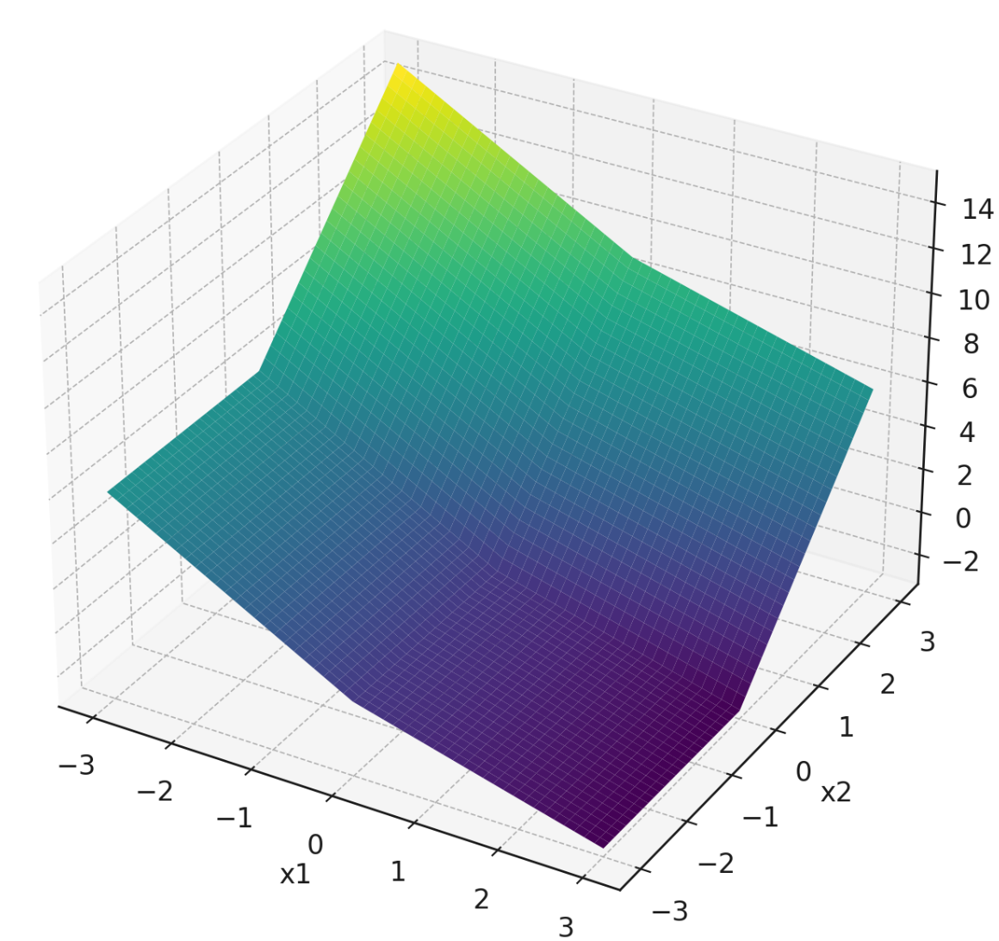
Note that the plot isn't intended to be precise enough to read off exact values, but it might help give you a sense of the function's behavior. In principle, you can do this question using only the piecewise definition of \(f\) given above.
Part 1)
What is the gradient of this function at the point \((1, 1)\)?
Part 2)
What is the gradient of this function at the point \((-1, -1)\)?
Part 3)
Which of the below are valid subgradients of the function at the point \((0,-2)\)? Select all that apply.
Solution
\((-2, 0)^T\) and \((-1.5, 0)^T\) are valid subgradients.
Part 4)
Which of the below are valid subgradients of the function at the point \((0,0)\)? Select all that apply.
Solution
\((-1, 3)^T\), \((-2, 0)^T\), and \((-1, 2)^T\) are valid subgradients.
Problem #085
Tags: gradient descent, subgradients
Recall that a subgradient of the absolute loss is:
Suppose you are running subgradient descent to minimize the risk with respect to the absolute loss in order to train a function \(H(x) = w_0 + w_1 x\) on the following data set:
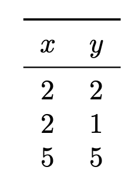
Suppose that the initial weight vector is \(\vec w = (0, 0)^T\) and that the learning rate is \(\eta = 1\). What will be the weight vector after one iteration of subgradient descent?
Problem #086
Tags: regularization
Recall that in ridge regression, we solve the following optimization problem:
where \(\lambda > 0\) is a hyperparameter controlling the strength of regularization.
Suppose you solve the ridge regression problem with \(\lambda = 2\), and the resulting solution has a mean squared error of \(10\).
Now suppose you increase the regularization strength to \(\lambda = 4\) and solve the ridge regression problem again. True or False: it is possible that the mean squared error of the new solution is less than \(10\).
By ``mean squared error,'' we mean \(\frac1n \sum_{i=1}^n (y_i - \vec w \cdot\operatorname{Aug}(\nvec{x}{i}))^2\)
Solution
False.
Problem #087
Tags: SVMs
Let \(\mathcal X\) be a binary classification data set \((\nvec{x}{1}, y_1), \ldots, (\nvec{x}{n}, y_n)\), where each \(\nvec{x}{i}\in\mathbb R^d\) and each \(y_i \in\{-1, 1\}\). Suppose that the data in \(\mathcal X\) is linearly separable.
Let \(\vec w_{\text{svm}}\) be the weight vector of the hard-margin support vector machine (SVM) trained on \(\mathcal X\). Let \(\vec w_{\text{lsq}}\) be the weight vector of the least squares classifier trained on \(\mathcal X\).
True or False: it must be the case that \(\vec w_{\text{svm}} = \vec w_{\text{lsq}}\).
Solution
False.
Problem #088
Tags: SVMs
Recall that the Soft-SVM optimization problem is given by
where \(\vec w\) is the weight vector, \(\vec\xi\) is a vector of slack variables, and \(C\) is a regularization parameter.
The two pictures below show as dashed lines the decision boundaries that result from training a Soft-SVM on the same data set using two different regularization parameters: \(C_1\) and \(C_2\).
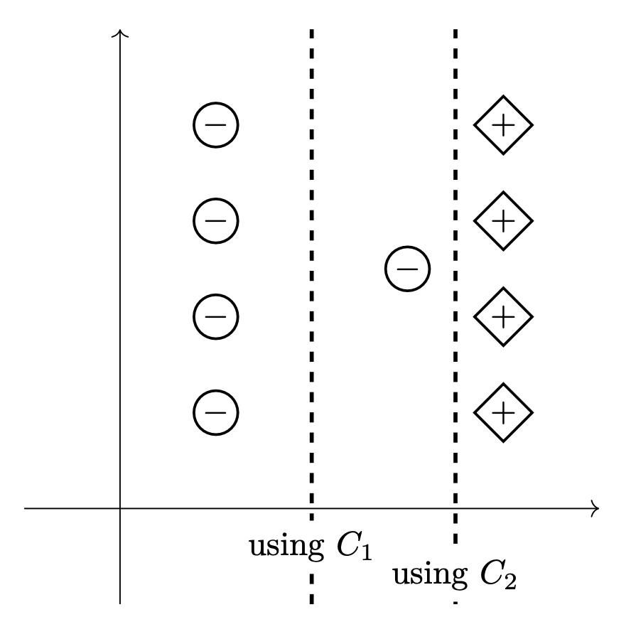
True or False: \(C_1 < C_2\).
Solution
True.
Problem #089
Consider the data set shown below. The points marked with ``+'' have label +1, while the ``\(\circ\)'' points have label -1. Shown are the places where a linear prediction function \(H\) is equal to zero (the thick solid line), 1, and -1 (the dotted lines). Each cell of the grid is 1 unit by 1 unit. The origin is not specified (it is not necssary to know the absolute coordinates of any points for this problem).
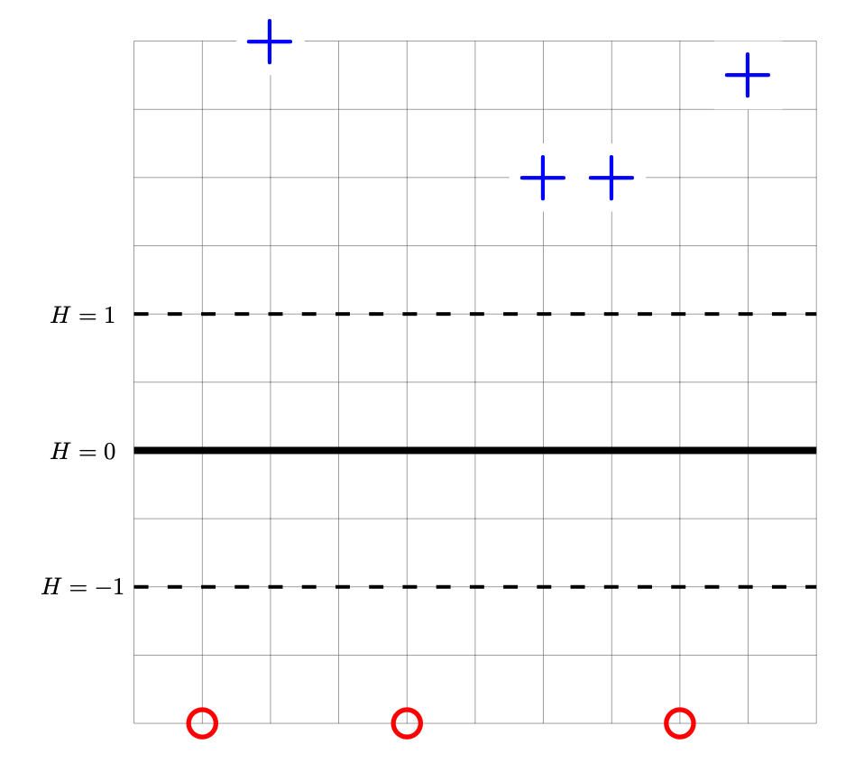
Let \(\vec w'\) be the parameter vector corresponding to prediction function \(H\) shown above. Let \(R(\vec w)\) be the risk with respect to the hinge loss on this data. True or False: the gradient of \(R\) evaluated at \(\vec w'\) is \(\vec 0\).
Solution
True.
Problem #090
Tags: gradients
Let \(\vec x, \vec\mu,\) and \(\vec b\) be vectors in \(\mathbb R^n\), and let \(A\) be a symmetric \(n \times n\) matrix. Consider the function:
What is \(\frac{d}{d \vec x} f(\vec x)\)?
Problem #091
Tags: regularization
The ``\(p = \frac12\)'' norm of a vector \(\vec w \in\mathbb R^d\), written \(\|\vec w\|_{\frac12}\), is defined as:
Let \(R(\vec w)\) be an unregularized risk function on a data set. The solid curves in the plot below are the contours of \(R(\vec w)\). The dashed lines show where \(\|\vec w\|_{\frac12}\) is equal to 1, 2, 3, and so on.
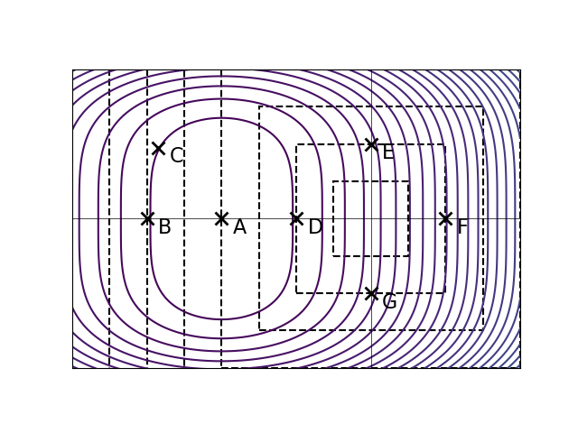
Let \(\tilde R(\vec w) = R(\vec w) + \lambda\|\vec w\|_{\frac12}\), with \(\lambda > 0\). The point marked \(A\) is the minimizer of the unregularized risk. Suppose it is known that one of the other points is the minimizer of the regularized risk, \(\tilde R(\vec w)\), for some unknown \(\lambda > 0\). Which point is it?
Solution
D.
Problem #092
Tags: kernel ridge regression
Suppose Gaussian kernel ridge regression is used to train a model on the following data set of \((x_i, y_i)\) pairs, using a kernel width parameter of \(\gamma = 1\) and a regularization parameter of \(\lambda = 0\):

Let \(\vec\alpha\) be the solution to the dual problem. What will be the sign of \(\alpha_5\)?
Solution
Negative. Video explanation: https://youtu.be/K_1cxeQAkdk
Problem #093
Tags: bayes error, bayes classifier
Shown below are two conditional densities, \(p_1(x \,|\, Y = 1)\) and \(p_0(x \given Y = 0)\), describing the distribution of a continuous random variable \(X\) for two classes: \(Y = 0\)(the solid line) and \(Y = 1\)(the dashed line). You may assume that both densities are piecewise constant.

Part 1)
What is \(\pr(1 \leq X \leq 3 \given Y = 0)\)?
Part 2)
Suppose \(\pr(Y = 1) = \pr(Y = 0) = 0.5\). What is the prediction of the Bayes classifier at \(x = 2.5\)?
Solution
Class 0.
Part 3)
Suppose again that \(\pr(Y = 1) = \pr(Y = 0) = 0.5\). What is the Bayes error with respect to this distribution?
Part 4)
Now suppose \(\pr(Y = 1) = 0.7\) and \(\pr(Y = 0) = 0.3\). What is the prediction of the Bayes classifier at \(x = 2.5\)?
Solution
Class 1.
Part 5)
Suppose again that \(\pr(Y = 1) = 0.7\) and \(\pr(Y = 0) = 0.3\). What is the Bayes error with respect to this distribution?
Solution
Video explanation: https://youtu.be/mczKmVUJauI
Problem #094
Tags: histogram estimators
In this problem, consider the following labeled data set of 15 points, 5 from Class 1 and 10 from Class 0.
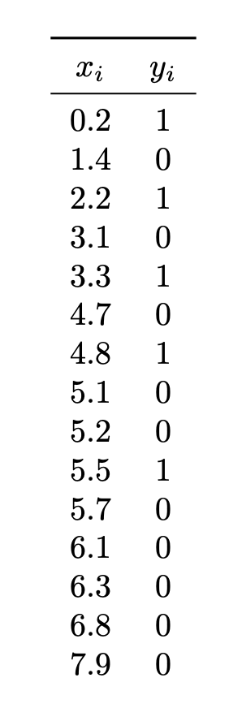
Suppose the class conditional densities are estimated using a histogram estimator with bins: \([0, 3), [3, 5), [5, 6),\) and \([6, 10)\). Note that the bins are not all the same width!
In all of the parts below, you may write your answer either as a decimal or as a fraction.
Part 1)
What is the estimate of the Class 0 density at \(x = 3.5\)? That is, what is the estimate for \(p(3.5 \given Y = 0)\)?
Part 2)
Using the same histogram estimator, what is the estimate of \(\pr(Y = 1 \given x = 3.5)\)?
Solution
Video explanation: https://youtu.be/0WFYpsDapC8
Problem #095
Tags: kernel ridge regression
Suppose a prediction function \(H(\vec x)\) is trained using kernel ridge regression on the data below using regularization parameter \(\lambda = 4\) and kernel \(\kappa(\vec x, \vec x') = (1 + \vec x \cdot\vec x')^2\):
\(\nvec{x}{1} = (1, 2, 0)\), \(y_1 = 1\)\(\nvec{x}{2} = (0, 1, 2)\), \(y_2 = -1\)\(\nvec{x}{3} = (2, 0, 2)\), \(y_3 = 1\)\(\nvec{x}{4} = (1, 0, 1)\), \(y_4 = -1\)\(\nvec{x}{5} = (0, 0, 0)\), \(y_5 = 1\) Suppose the solution to the dual problem is \(\vec\alpha = (2, 0, 1, -1, 2)\).
Consider a new point \(\vec x = (1, 1, 1)\). What is \(H(\vec x)\)?
Solution
Video explanation: https://youtu.be/miyY9BeL0QI
Problem #096
Tags: Gaussians
Recall that the density of a \(d\)-dimensional ``axis-aligned'' Gaussian (that is, a Gaussian with diagonal covariance matrix \(C\)) is given by:
Consider the marginal density \(p_1(x_1)\), which is the density of the first coordinate, \(x_1\), of a \(d\)-dimensional axis-aligned Gaussian.
True or False: \(p_1(x_1)\) must be a Gaussian density.
Solution
True. Video explanation: https://youtu.be/5ZJ6ZIvgMGk
Problem #097
Tags: naive bayes
Consider the below data set collecting information on a set of 10 flowers.
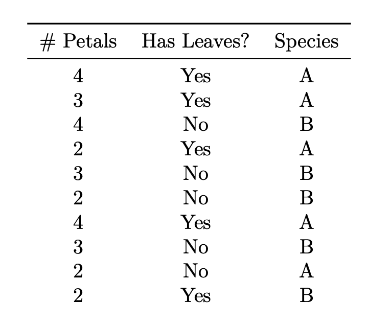
What species does a Naive Bayes classifier predict for a flower with 3 petals and no leaves?
Solution
B. Video explanation: https://youtu.be/iKPAhJJcu6s
Problem #098
Tags: conditional independence
Suppose Justin has a dartboard at home that looks like the below:
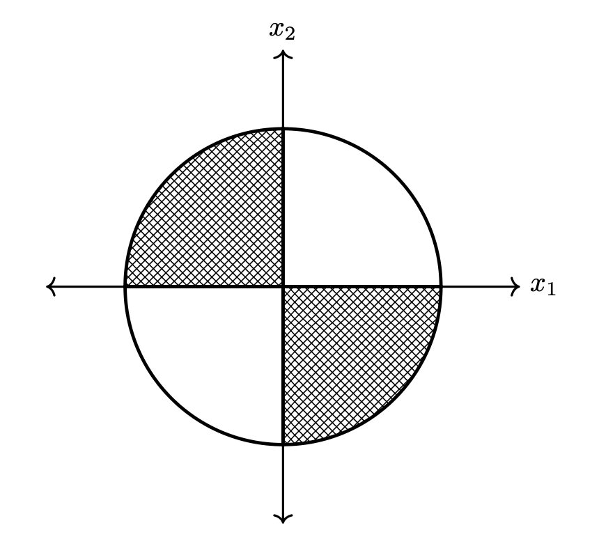
Justin uses the dartboard to determine how long the midterm will be: if he throws a dart and it lands in the shaded region, the midterm will have 17 questions; if it lands in the unshaded region, it will have 16 questions.
Assume that Justin's dart throws are drawn from a uniform distribution on the dartboard, and that the dart always hits the board (that is, the density function is constant everywhere on the dartboard, and zero off of the dartboard). Let \(X_1\) be the horizontal component of a dart throw and \(X_2\) be the vertical component. Let \(Q\) be the number of questions on the exam; since it is chosen randomly, it is also a random number.
Part 1)
True or False: \(X_1\) and \(X_2\) are independent.
Solution
False.
Part 2)
True or False: \(X_1\) and \(X_2\) are conditionally independent given \(Q\).
Solution
False.
Part 3)
True or False: \(X_1\) and \(Q\) are independent.
Solution
True.
Part 4)
True or False: \(X_1\) and \(Q\) are conditionally independent given \(X_2\).
Solution
False.
Solution
Video explanation: https://youtu.be/b4XlZsePCgU
Problem #099
Tags: Gaussians, linear and quadratic discriminant analysis
Suppose the underlying class-conditional densities in a binary classification problem are known to be multivariate Gaussians.
Suppose a Quadratic Discriminant Analysis (QDA) classifier using full covariance matrices for each class is trained on a data set of \(n\) points sampled from these densities.
True or False: As the size of the data set grows (that is, as \(n \to\infty\)), the training error of the QDA classifier must approach zero.
Solution
False. Video explanation: https://youtu.be/t40ex-JCYLY
Problem #100
Tags: Gaussians, maximum likelihood
Suppose a univariate Gaussian density function \(\hat f\) is fit to a set of data using the method of maximum likelihood estimation (MLE).
True or False: \(\hat f\) must be between 0 and 1 everywhere. That is, it must be the case that for every \(x \in\mathbb R\), \(0 < \hat f(x) \leq 1\).
Solution
False. Video explanation: https://youtu.be/zvpLrG4FYEc
Problem #101
Tags: linear and quadratic discriminant analysis
Suppose Quadratic Discriminant Analysis (QDA) is used to train a classifier on the following data set of \((x_i, y_i)\) pairs, where \(x_i\) is the feature and \(y_i\) is the class label:
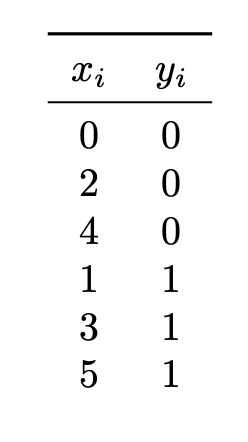
Univariate Gaussians are used to model the class conditional densities, each with their own mean and variance.
What is the prediction of the QDA classifier at \(x = 2.25\)?
Solution
Class 0.
Video explanation: https://youtu.be/5VxizVoBHsA
Problem #102
Tags: maximum likelihood
Consider Justin's rectangle density. It is a parametric density with two parameters, \(\alpha\) and \(\beta\), and pdf:
A picture of the density is shown below for convenience:

In all of the below parts, let \(\mathcal X = \{1, 2, 3, 6, 9\}\) be a data set of 5 points generated from the rectangle density.
Your answers to the below problems should all be in the form of a number. You may leave your answer as an unsimplified fraction or a decimal, if you prefer.
Part 1)
Let \(\mathcal L(\alpha, \beta; \mathcal X)\) be the likelihood function (with respect to the data given above). What is \(\mathcal L(6, 5)\)? Note that \(\mathcal L\) is the likelihood, not the log-likelihood.
Part 2)
What is \(\mathcal L(3, 2)\)?
Part 3)
What are the maximum likelihood estimates of \(\alpha\) and \(\beta\)?
\(\alpha\): \(\beta\):
Solution
Video explanation: https://youtu.be/loc1xv2QNJk
Problem #103
Tags: covariance, object type
Part 1)
Let \(\mathcal{X}\) be a data set of \(n\) points in \(\mathbb{R}^d\), and let \(\vec\alpha\) be the solution to the kernel ridge regression dual problem. What type of object is \(\vec\alpha\)?
Solution
B.
Part 2)
Suppose \(\nvec{x}{1}, \ldots, \nvec{x}{n}\) is a set of \(n\) points in \(\mathbb{R}^d\), \(y_1, \ldots, y_n\) is a set of \(n\) labels (each either \(-1\) or \(1\)), \(\vec w\) is a \(k\)-dimensional vector, and \(\lambda\) is a scalar.
Let \(\vec\phi : \mathbb{R}^d \to\mathbb{R}^k\) be a feature map.
What type of object is the following?
Solution
D.
Part 3)
Let \(\nvec{x}{1}, \ldots, \nvec{x}{n}\) be a set of \(n\) points in \(\mathbb{R}^d\). Let \(\vec\mu = \sum_{i=1}^n \nvec{x}{i}\) be the mean of the data set, and let \(C\) be the sample covariance matrix.
What type of object is the following?
Solution
A.
Part 4)
Let \(\nvec{x}{1}, \ldots, \nvec{x}{n}\) be a data set of \(n\) points in \(\mathbb{R}^d\) sampled from a multivariate Gaussian with known covariance matrix but unknown mean, \(\vec\mu\). Let \(\mathcal L(\vec\mu)\) be the likelihood function for the Gaussian's mean, \(\vec\mu\). What type of object is \(\mathcal L\)?
Solution
Video explanation: https://youtu.be/wr8sNCEiIQs
Problem #104
Tags: histogram estimators
Let \((\nvec{x}{1}, y_1), \ldots, (\nvec{x}{n}, y_n)\) be a set of \(n\) points in a binary classification problem, where \(\nvec{x}{i}\in\mathbb{R}^2\) and \(y_i \in\{0, 1\}\).
Suppose a classifier is trained by estimating the class-conditional densities with histograms using rectangular bins and applying the Bayes classification rule.
True or False: it is always possible to achieve a 100\% training accuracy with this classifier by choosing the rectangular bins to be sufficiently small. You may assume that no two points \(\nvec{x}{i}\) and \(\nvec{x}{j}\) are identical.
Solution
True. Video explanation: https://youtu.be/A1fBjOnjs5E
Problem #105
Tags: naive bayes
Does standardizing the data possibly change the prediction made by Gaussian Naive Bayes?
More precisely, let \((\nvec{x}{1}, y_1), \ldots, (\nvec{x}{n}, y_n)\) be a set of training data for a binary classification problem, where each \(\nvec{x}{i}\in\mathbb R^d\) and each \(y_i \in\{0, 1\}\). Suppose that when a Gaussian Na\"ive Bayes classifier is trained on this data set, \(\nvec{x}{1}\) is predicted to be from Class \(0\).
Now suppose that the data set is standardized by subtracting the mean of each feature and dividing by its standard deviation. This is done for the data set as a whole, not separately for each class. Let \(\nvec{z}{1}, \ldots, \nvec{z}{n}\) be the standardized data set.
True or False: when a Gaussian Na\"ive Bayes classifier is trained on the standardized data set, it must still predict \(\nvec{z}{1}\) to be from Class \(0\).
Solution
True.
Video explanation: https://youtu.be/hGlWsEk_tYI
Problem #106
Tags: covariance, maximum likelihood
Consider the following set of 6 data points:
In the below parts, your answers should be given as numbers. You may leave your answer as an unsimplified fraction or a decimal, if you prefer.
Part 1)
What is the (1,2) entry of the sample covariance matrix?
Part 2)
What is the (2,2) entry of the sample covariance matrix?
Solution
Video explanation: https://youtu.be/BvFKfpGVR9k
Problem #107
Tags: covariance, Gaussians
The picture below shows the contours of a multivariate Gaussian density function:
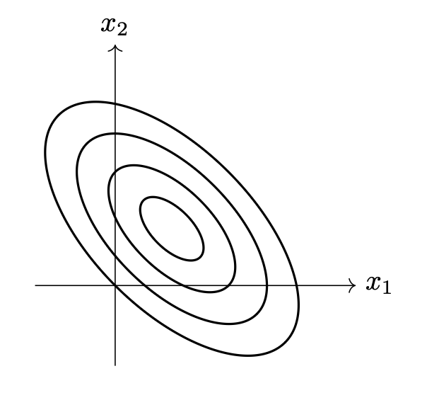
Which one of the following could possibly be the covariance matrix of this Gaussian?
Solution
C. Video explanation: https://youtu.be/5b1nzF0yYeE
Problem #108
Tags: linear and quadratic discriminant analysis
The picture below shows the decision boundary of a binary classifier. The shaded region is where the classifier predicts for Class 1; everywhere else, the classifier predicts for Class 0.
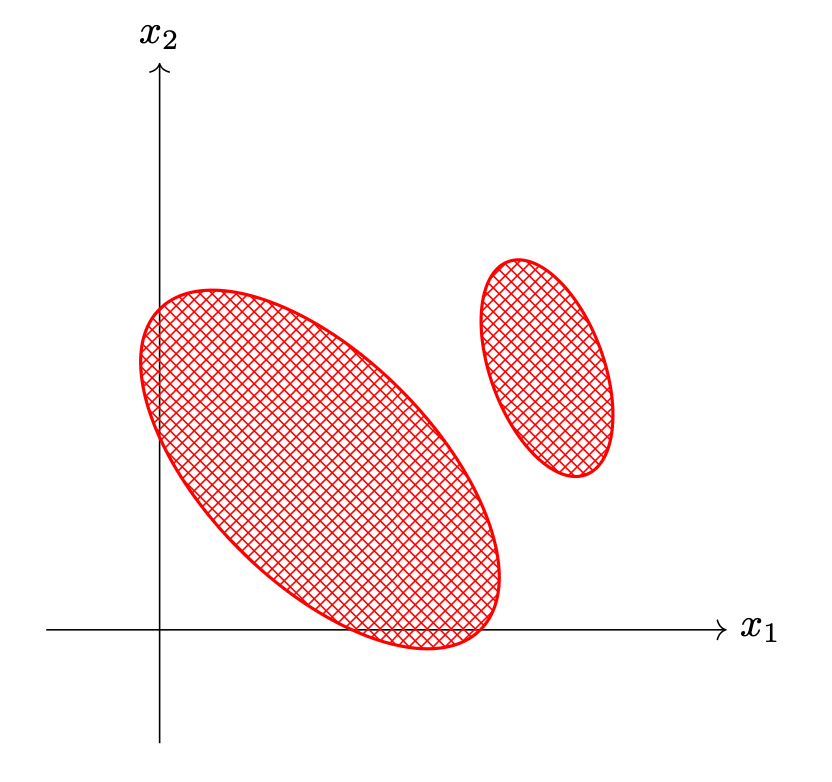
True or False: this could be the decision boundary of a Quadratic Discriminant Analysis (QDA) classifier that models the class-conditional densities as multivariate Gaussians with full covariance matrices.
Solution
False. Video explanation: https://youtu.be/fQm3_JcpVys
Problem #109
Tags: kernel ridge regression
Consider the following data set of four points whose feature vectors are in \(\mathbb{R}^2\) and whose labels are in \(\{-1,1\}\):

For convenience, we've plotted the data below. Each point is labeled with either the positive class (denoted by \(\times\)) or the negative class (denoted by \(\bullet\)).

Suppose an unnamed kernel classifier \(H(\vec x) = \sum_{i=1}^n \alpha_i \kappa(\nvec{x}{x}, \vec x)\) has been trained on this data using a (spherical) Gaussian kernel and kernel width parameter \(\gamma = 1\). Suppose the solution to the dual problem is found to be \(\vec\alpha = (1, 1, 1, -3)^T\).
What class will the classifier predict for the point \((2,2)\)? For convenience, we've plotted this point on the graph above as a question mark.
Solution
-1 (the \(\bullet\) class).
Problem #110
Tags: bayes error, bayes classifier
Shown below are two conditional densities, \(p_1(x \,|\, Y = 1)\) and \(p_0(x \given Y = 0)\), describing the distribution of a continuous random variable \(X\) for two classes: \(Y = 0\)(the solid line) and \(Y = 1\)(the dashed line). You may assume that both densities are piecewise constant.

Part 1)
Suppose that \(\pr(Y = 1) = \pr(Y = 0) = 0.5\). What is \(\pr(1 \leq X \leq 3)\)?
Part 2)
Suppose \(\pr(Y = 1) = \pr(Y = 0) = 0.5\). What is the prediction of the Bayes classifier at \(x = 1.5\)?
Solution
Class 0.
Part 3)
Suppose again that \(\pr(Y = 1) = \pr(Y = 0) = 0.5\). What is the Bayes error with respect to this distribution?
Part 4)
Now suppose \(\pr(Y = 1) = 0.7\) and \(\pr(Y = 0) = 0.3\). What is \(\pr(1 \leq X \leq 3)\)?
Part 5)
Suppose again that \(\pr(Y = 1) = 0.7\) and \(\pr(Y = 0) = 0.3\). What is the prediction of the Bayes classifier at \(x = 1.5\)?
Solution
Class 1.
Part 6)
Suppose again that \(\pr(Y = 1) = 0.7\) and \(\pr(Y = 0) = 0.3\). What is the Bayes error with respect to this distribution?
Problem #111
Tags: bayes classifier, histogram estimators
In this problem, consider the following labeled data set of 19 points, 7 from Class 1 and 12 from Class 0.

Suppose the class conditional densities are estimated using a histogram estimator with bins: \([0, .25), [.25, .5), [.5, 75),\) and \([.75, 1.0)\).
In all of the parts below, you may write your answer either as a decimal or as a fraction.
Part 1)
What is the estimate of the Class 0 density at \(x = 0.6\)? That is, what is the estimate \(\hat p(0.6 \given Y = 0)\)?
Part 2)
Using the same histogram estimator, what is the estimate \(\hat\pr(Y = 1 \given x = 0.35)\)?
Part 3)
What is the estimate of the marginal density of \(x\) at \(x = 0.1\)? That is, what is \(\hat p(0.1)\)?
Part 4)
Let \(\hat p(x \given Y = 0)\) be the histogram density estimate for the Class 0 conditional density. What is
Problem #112
Tags: kernel ridge regression
Suppose a prediction function \(H(\vec x)\) is trained using kernel ridge regression on the data below using regularization parameter \(\lambda = 4\) and kernel \(\kappa(\vec x, \vec x') = (1 + \vec x \cdot\vec x')^2\):
\(\nvec{x}{1} = (0, 1, 1)\), \(y_1 = 1\)\(\nvec{x}{2} = (1, 1, 1)\), \(y_2 = -1\)\(\nvec{x}{3} = (2, 2, 2)\), \(y_3 = 1\)\(\nvec{x}{4} = (1, 1, 0)\), \(y_4 = -1\)\(\nvec{x}{5} = (0, 1, 0)\), \(y_5 = 1\) Suppose the solution to the dual problem is \(\vec\alpha = (-1, 1, 0, 3, -2)\).
Consider a new point \(\vec x = (2, 0, 1)^T\). What is \(H(\vec x)\)?
Problem #113
Tags: covariance, maximum likelihood
Consider the following set of 6 data points:
In the below parts, your answers should be given as numbers. You may leave your answer as an unsimplified fraction or a decimal, if you prefer.
Part 1)
What is the (1,3) entry of the sample covariance matrix?
Part 2)
What is the (1,2) entry of the sample covariance matrix?
Problem #114
Tags: conditional independence, Gaussians, covariance
Let \(X_1\) and \(X_2\) be two independent random variables. Suppose the distribution of \(X_1\) has the Gaussian density:
while the distribution of \(X_2\) has the Gaussian density:
Which one of the following pictures shows the contours of the joint density \(p(x_1, x_2)\)(the density for the joint distribution of \(X_1\) and \(X_2\))?
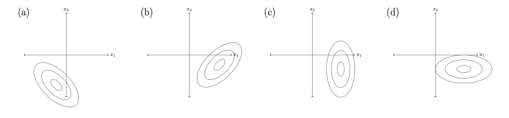
Solution
Picture (d).
Problem #115
Tags: Gaussians, maximum likelihood
Suppose it is known that the distribution of a random variable \(X\) has a univariate Gaussian density function \(f\).
True or False: \(f\) must be between 0 and 1 everywhere. That is, it must be the case that for every \(x \in\mathbb R\), \(0 < f(x) \leq 1\).
Solution
False.
Problem #116
Tags: covariance, Gaussians, bayes error
Suppose that, in a binary classification setting, the true underlying class-conditional densities \(p(\vec x \given Y=0)\) and \(p(\vec x \given Y=1)\) are known to each be multivariate Gaussians with full covariance matrices. Suppose, also, that \(\pr(Y = 1) = \pr(Y = 0) = \frac{1}{2}\).
True or False: it is possible that the Bayes error in this case is exactly zero.
Solution
False.
Problem #117
Tags: maxium likelihood
Consider Justin's right-triangle density. It is a parametric density with two parameters, \(\alpha\) and \(\beta\)(with \(\beta >0\)), and pdf:
A picture of the density is shown below for convenience:
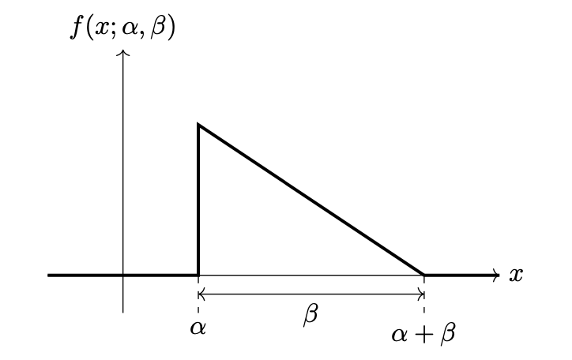
Your answers to the below problems should all be in the form of a number. You may leave your answer as an unsimplified fraction or a decimal, if you prefer.
Part 1)
Let \(\mathcal X = \{0, 1, 2\}\) be a data set of 4 points and let \(\mathcal L(\alpha, \beta; \mathcal X)\) be the likelihood function (with respect to this data). What is \(\mathcal L(0, 2)\)? Note that \(\mathcal L\) is the likelihood, not the log-likelihood.
Part 2)
Let \(\mathcal X = \{0, 1, 2\}\) be the same data set as in the previous part. What is \(\mathcal L(0, 4)\)?
Part 3)
Now let \(\mathcal X = \{6, 7\}\) be a new data set of just two points. What are the maximum likelihood estimates of \(\alpha\) and \(\beta\) with respect to this data? Remember, \(\beta > 0\).
\(\alpha\): \(\beta\):
Problem #118
Tags: object type
Part 1)
Let \(\mathcal{X}\) be a data set of \(n\) points in \(\mathbb{R}^d\), and let \(C\) be the sample covariance matrix of \(\mathcal{X}\). Let \(|C|\) denote the determinant of \(C\). What type of object is the following?
Solution
A.
Part 2)
Suppose \(\nvec{x}{1}, \ldots, \nvec{x}{n}\) is a set of \(n\) points in \(\mathbb{R}^d\), \(\lambda\) is a positive real number, \(\vec y \in\mathbb R^n\) is a vector of targets, and \(\vec\phi : \mathbb{R}^d \to\mathbb{R}^k\) is a feature map. Let \(K\) be the kernel matrix for this feature map on this data set, and let \(I\) be an identity matrix (the same shape as \(K\)). What type of object is the following?
Solution
C.
Part 3)
Let \(\nvec{x}{1}, \ldots, \nvec{x}{n}\) be a set of \(n\) points in \(\mathbb{R}^d\). Let \(\vec\mu = \frac1n \sum_{i=1}^n \nvec{x}{i}\) be the mean of the data set, and let \(C\) be the sample covariance matrix.
What type of object is the following?
Solution
B.
Part 4)
Let \(\nvec{x}{1}, \ldots, \nvec{x}{n}\) be a data set of \(n\) points, let \(\vec\alpha\in\mathbb{R}^n\), and let \(\kappa\) be a kernel function for a feature map \(\vec\phi : \mathbb R^d \to\mathbb R^k\). Suppose also that \(\vec z \in\mathbb{R}^d\). What type of object is the following?
Solution
A.
Problem #119
Tags: histogram estimators
Consider the following data set of 14 points in \(\mathbb R^2\). Each point has a label in \(\{ 1, -1 \}\). Points from Class 1 are marked with \(\times\) and points from Class -1 are marked with \(\bullet\).
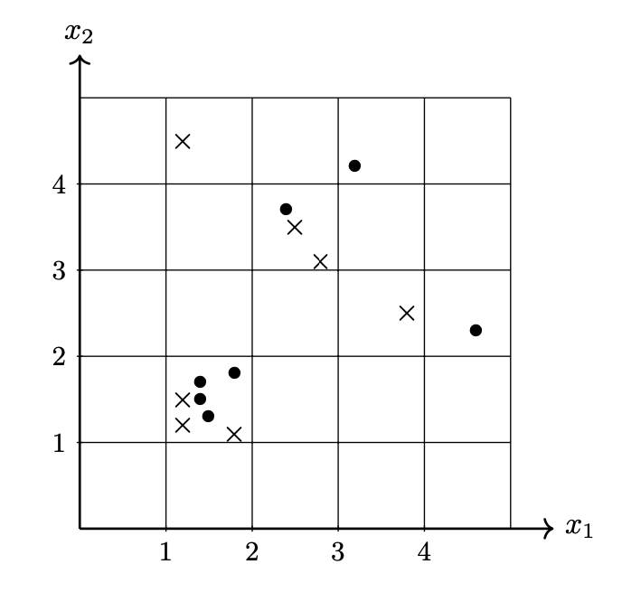
Suppose the class-conditional density estimates are computed from this data using a histogram density estimator using the \(1 \times 1\) bins shown in the figure above.
If these estimates are used in place of the true class-conditional densities in the Bayes classifier, what will be the training error of the classifier? That is, what percentage of the data above will be misclassified? You may leave your answer as a fraction or a decimal.
Problem #120
Tags: covariance, Gaussians
The picture below shows the contours of a multivariate Gaussian density function:
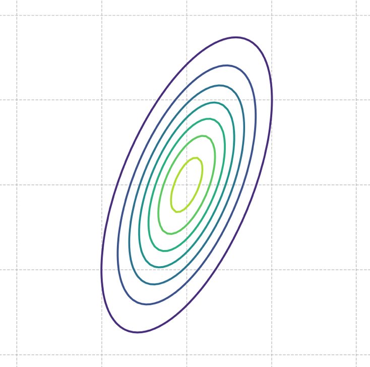
Which one of the following could possibly be the covariance matrix of this Gaussian?
Solution
C.
Problem #121
Tags: linear and quadratic discriminant analysis
The picture below shows the decision boundary of a binary classifier. The shaded region is where the classifier predicts for Class 1; everywhere else, the classifier predicts for Class 0. You can assume that the shaded region extends infinitely to the left and down.
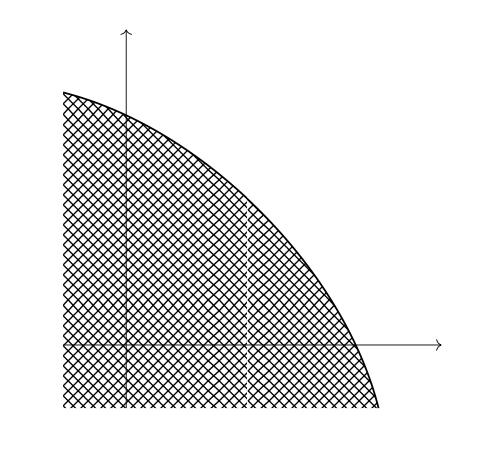
True or False: this could be the decision boundary of a classifier that estimates each class conditional density using two Gaussians with different means but the same, shared full covariance matrix, and applies the Bayes classification rule.
Solution
False.
Problem #122
Tags: conditional independence
Suppose that Justin has a wall at home that he has painted to look like the below:
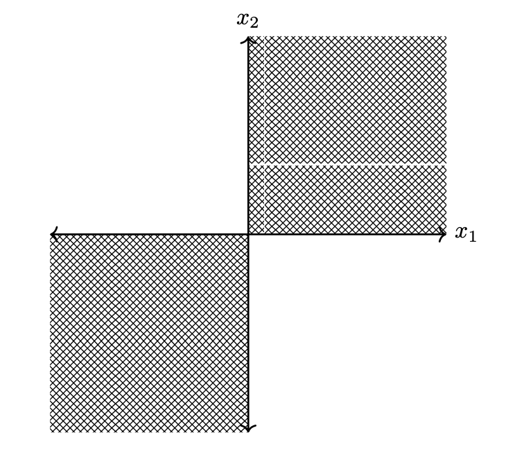
Justin uses the wall to determine how long Redemption Midterm 02 will be: if he throws a dart at the origin and it lands in the shaded region, the redemption midterm will have 14 questions; if it lands in the unshaded region, it will have 2 questions.
Assume that Justin's dart throws are drawn from a spherical Gaussian whose mean is at the origin. Let \(X_1\) be the horizontal component of a dart throw and \(X_2\) be the vertical component. Let \(Q\) be the number of questions on the exam; since it is chosen randomly, it is also a random number. You can assume that the wall is infinitely large, and that the shaded regions extend infinitely up and to the right, and down and to the left.
Part 1)
True or False: \(X_1\) and \(X_2\) are independent.
Solution
True.
Part 2)
True or False: \(X_1\) and \(X_2\) are conditionally independent given \(Q\).
Solution
False.
Part 3)
Let \(D = \sqrt{X_1^2 + X_2^2}\), and note that \(D\) is the distance of a dart throw from the origin. True or False: \(D\) and \(Q\) are independent.
Solution
True.
Part 4)
True or False: \(X_1\) and and \(X_2\) are conditionally independent given \(D\).
Solution
False.